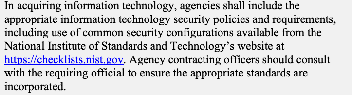
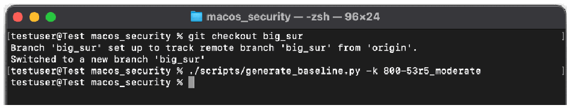
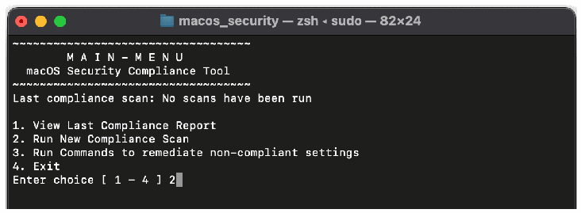
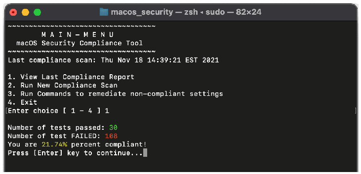
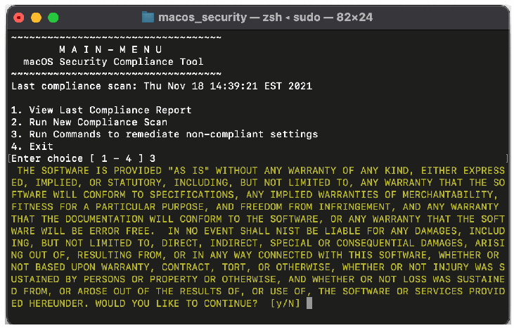
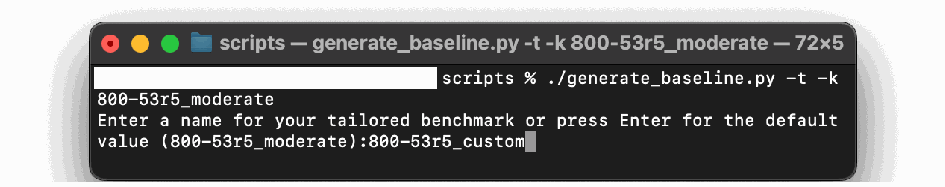

NIST SP 800-219 Rev. 1 日本語訳
英語タイトル : Automated Secure Configuration Guidance from the macOS Security Compliance Project (mSCP)日本語タイトル : macOSセキュリティコンプライアンスプロジェクト（mSCP）による自動化されたセキュア構成ガイダンス
公開日 : 2023-07-21
原文URL : https://csrc.nist.gov/pubs/sp/800/219/r1/final
翻訳編集 : 自動生成（有志による非公式の日本語訳）, 原文取得日 : 2026-09-27, 訳文 : 330 / 333 ブロック
[要約] SP 800-219 Rev. 1 は、macOSセキュリティコンプライアンスプロジェクト（mSCP）を紹介し、macOSのセキュア構成を自動化して保護・評価するためのリソースを説明する文書です。mSCPとその構成要素、GitHubサイトで提供されるセキュアベースラインと関連ルール、これらを活用するユースケースを概説します。システム管理者、セキュリティ専門家、監査担当者などに向けた入門で、前版からの主な更新はベースラインを調整してカスタムベンチマークを作成する新機能です。
NIST Special Publication NIST SP 800-219r1
NIST特別刊行物 NIST SP 800-219 Rev.1
Automated Secure Configuration
自動化されたセキュア構成
Guidance from the macOS Security Compliance Project
macOSセキュリティコンプライアンスプロジェクトによるガイダンス
(mSCP)
（mSCP）
Mark Trapnell Eric Trapnell Murugiah Souppaya Bob Gendler Dan Brodjieski Allen Golbig Karen Scarfone Blair Heiserman
Mark Trapnell、Eric Trapnell、Murugiah Souppaya、Bob Gendler、Dan Brodjieski、Allen Golbig、Karen Scarfone、Blair Heiserman
This publication is available free of charge from: https://doi.org/10.6028/NIST.SP.800-219r1
本刊行物は次のURLから無料で入手できます：https://doi.org/10.6028/NIST.SP.800-219r1
NIST Special Publication NIST SP 800-219r1
NIST特別刊行物 NIST SP 800-219 Rev.1
Automated Secure Configuration
自動化されたセキュア構成
Guidance from the macOS Security Compliance Project
macOSセキュリティコンプライアンスプロジェクトによるガイダンス
(mSCP)
（mSCP）
Mark Trapnell
Eric Trapnell
Murugiah Souppaya
Computer Security Division
Information Technology
Laboratory
Mark Trapnell
Eric Trapnell
Murugiah Souppaya
コンピュータセキュリティ部門
情報技術
研究所
Dan Brodjieski
NASA
Dan Brodjieski
NASA
Allen Golbig
Jamf
Allen Golbig
Jamf
Karen Scarfone
Scarfone Cybersecurity
Karen Scarfone
Scarfone Cybersecurity
Bob Gendler
Customer Access and
Support Division
Office of Information Systems
Management
Bob Gendler
顧客アクセスおよび
サポート部門
情報システム
管理室
Blair Heiserman
Information Technology Security & Networking Division
Office of Information Systems Management
Blair Heiserman
情報技術セキュリティ・ネットワーキング部門
情報システム管理室
This publication is available free of charge from: https://doi.org/10.6028/NIST.SP.800-219r1
本刊行物は次のURLから無料で入手できます：https://doi.org/10.6028/NIST.SP.800-219r1
July 2023
2023年7月
U.S. Department of Commerce Gina M. Raimondo, Secretary
米国商務省 ジーナ・M・ライモンド長官
National Institute of Standards and Technology
国立標準技術研究所
Laurie E. Locascio, NIST Director and Undersecretary of Commerce for Standards and Technology
ローリー・E・ロカシオ、NIST所長兼商務次官（標準技術担当）
Certain commercial equipment, instruments, software, or materials, commercial or non-commercial, are identified in this paper in order to specify the experimental procedure adequately. Such identification does not imply recommendation or endorsement of any product or service by NIST, nor does it imply that the materials or equipment identified are necessarily the best available for the purpose.
この論文では、実験手順を適切に規定するため、特定の商用機器、計器、ソフトウェアまたは材料（商用・非商用を問わない）を明示しています。この明示は、NISTが特定の製品またはサービスを推奨または支持することを意味するものではなく、また、明示された材料または機器が目的に対して必ずしも最良のものであることを意味するものでもありません。
There may be references in this publication to other publications currently under development by NIST in accordance with its assigned statutory responsibilities. The information in this publication, including concepts and methodologies, may be used by federal agencies even before the completion of such companion publications. Thus, until each publication is completed, current requirements, guidelines, and procedures, where they exist, remain operative. For planning and transition purposes, federal agencies may wish to closely follow the development of these new publications by NIST.
本刊行物には、NISTに割り当てられた法定責任に従って現在策定中の他の刊行物への参照が含まれる場合があります。本刊行物に記載された情報（概念および方法論を含む）は、それらの関連刊行物が完成する前であっても、連邦機関が利用できます。したがって、各刊行物が完成するまでは、現行の要件、ガイドラインおよび手順が存在する場合、それらは引き続き有効です。連邦機関は、計画および移行のため、NISTによるこれらの新しい刊行物の策定状況を注意深く確認するとよいでしょう。
Organizations are encouraged to review all draft publications during public comment periods and provide feedback to NIST. Many NIST cybersecurity publications, other than the ones noted above, are available at https://csrc.nist.gov/publications.
組織には、パブリックコメント期間中にすべての草案刊行物を確認し、NISTにフィードバックを提供することを推奨します。上記以外のNISTサイバーセキュリティ刊行物の多くは、https://csrc.nist.gov/publications で入手できます。
Authority
This publication has been developed by NIST in accordance with its statutory responsibilities under the Federal Information Security Modernization Act (FISMA) of 2014, 44 U.S.C. § 3551 et seq., Public Law (P.L.) 113-283. NIST is responsible for developing information security standards and guidelines, including minimum requirements for federal information systems, but such standards and guidelines shall not apply to national security systems without the express approval of appropriate federal officials exercising policy authority over such systems. This guideline is consistent with the requirements of the Office of Management and Budget (OMB) Circular A-130.
権限
本刊行物は、2014年連邦情報セキュリティ近代化法（FISMA）、合衆国法典第44編§3551以降、ならびに公法（P.L.）113-283に基づく法定責任に従ってNISTが策定しました。NISTは、連邦情報システムに関する最低要件を含む情報セキュリティ標準およびガイドラインを策定する責任を負います。ただし、これらの標準およびガイドラインは、国家安全保障システムに対する政策権限を行使する適切な連邦当局者の明示的な承認がない限り、当該システムには適用されません。本ガイドラインは、行政管理予算局（OMB）通達A-130の要件に整合しています。
Nothing in this publication should be taken to contradict the standards and guidelines made mandatory and binding on federal agencies by the Secretary of Commerce under statutory authority. Nor should these guidelines be interpreted as altering or superseding the existing authorities of the Secretary of Commerce, Director of the OMB, or any other federal official. This publication may be used by nongovernmental organizations on a voluntary basis and is not subject to copyright in the United States. Attribution would, however, be appreciated by NIST.
本刊行物のいかなる内容も、法定権限に基づき商務長官が連邦機関に義務付け、拘束力を持たせた標準およびガイドラインに反すると解釈してはなりません。また、本ガイドラインを、商務長官、OMB長官またはその他の連邦当局者が有する既存の権限を変更または取って代わるものと解釈してもなりません。本刊行物は非政府組織が任意に利用できます。また、米国内では著作権の対象ではありません。ただし、NISTへの帰属表示を歓迎します。
NIST Technical Series Policies
Copyright, Use, and Licensing Statements
NIST Technical Series Publication Identifier Syntax
NIST技術シリーズの方針
著作権・使用・ライセンスに関する声明
NIST技術シリーズ刊行物識別子の構文
Publication History
Approved by the NIST Editorial Review Board on 2023-06-29
Supersedes NIST SP 800-219 (June 2022) https://doi.org/10.6028/NIST.SP.800-219
刊行履歴
2023年6月29日にNIST編集審査委員会が承認
NIST SP 800-219（2022年6月）を置き換える https://doi.org/10.6028/NIST.SP.800-219
How to Cite this NIST Technical Series Publication:
Trapnell M, Trapnell E, Souppaya MP, Gendler B, Brodjieski D, Golbig A, Scarfone K, Heiserman B (2023) Automated Secure Configuration Guidance from the macOS Security Compliance Project (mSCP). (National Institute of Standards and Technology, Gaithersburg, MD), NIST Special Publication (SP) NIST SP 800-219r1. https://doi.org/10.6028/NIST.SP.800-219r1
本NIST技術シリーズ刊行物の引用方法：
Trapnell M、Trapnell E、Souppaya MP、Gendler B、Brodjieski D、Golbig A、Scarfone K、Heiserman B（2023）「macOSセキュリティコンプライアンスプロジェクト（mSCP）による自動化されたセキュア構成ガイダンス」（国立標準技術研究所、メリーランド州ゲイザースバーグ）、NIST特別刊行物（SP）NIST SP 800-219r1。https://doi.org/10.6028/NIST.SP.800-219r1
Author ORCID iDs
Mark Trapnell: 0000-0002-5266-3610
Eric Trapnell: 0000-0001-9315-3732
Murugiah Souppaya: 0000-0002-8055-8527
Bob Gendler: 0000-0002-8928-6492
Karen Scarfone: 0000-0001-6334-9486
著者のORCID iD
Mark Trapnell：0000-0002-5266-3610
Eric Trapnell：0000-0001-9315-3732
Murugiah Souppaya：0000-0002-8055-8527
Bob Gendler：0000-0002-8928-6492
Karen Scarfone：0000-0001-6334-9486
Contact Information
applesec@nist.gov
連絡先
applesec@nist.gov
National Institute of Standards and Technology Attn: Computer Security Division, Information Technology Laboratory 100 Bureau Drive (Mail Stop 8930) Gaithersburg, MD 20899-8930
国立標準技術研究所 宛先：コンピュータセキュリティ部門、情報技術研究所 100 Bureau Drive（Mail Stop 8930） Gaithersburg, MD 20899-8930
All comments are subject to release under the Freedom of Information Act (FOIA).
すべてのコメントは、情報公開法（FOIA）に基づき公開される場合があります。
Abstract
概要
The macOS Security Compliance Project (mSCP) provides resources that system administrators, security professionals, security policy authors, information security officers, and auditors can leverage to secure and assess macOS desktop and laptop system security in an automated way. This publication introduces the mSCP and gives an overview of the resources available from the project’s GitHub site, which is continuously curated and updated to support each new release of macOS. The GitHub site provides practical, actionable recommendations in the form of secure baselines and associated rules. This publication also describes use cases for leveraging the mSCP content. Updates from the previous version of this publication mainly involve the new mSCP capability to create a custom benchmark by tailoring a baseline.
macOSセキュリティコンプライアンスプロジェクト（mSCP）は、システム管理者、セキュリティ専門家、セキュリティポリシー作成者、情報セキュリティ担当者および監査担当者が、macOSデスクトップおよびノートパソコンのシステムセキュリティを自動化された方法で保護し、評価するためのリソースを提供します。本刊行物ではmSCPを紹介し、新しいmacOSの各リリースを支援するため継続的に管理・更新されるプロジェクトのGitHubサイトで利用できるリソースの概要を説明します。GitHubサイトでは、セキュアベースラインと関連ルールという形で、実用的で実行可能な推奨事項を提供しています。本刊行物では、mSCPのコンテンツを活用するユースケースも説明します。前版からの主な更新は、ベースラインを調整してカスタムベンチマークを作成するmSCPの新機能に関するものです。
Keywords
キーワード
Apple; baseline; configuration management; endpoint device security; macOS; macOS Security Compliance Project (mSCP); operating system security; security compliance.
Apple、ベースライン、構成管理、エンドポイントデバイスセキュリティ、macOS、macOSセキュリティコンプライアンスプロジェクト（mSCP）、オペレーティングシステムセキュリティ、セキュリティコンプライアンス
Reports on Computer Systems Technology
コンピュータシステム技術に関する報告書
The Information Technology Laboratory (ITL) at the National Institute of Standards and Technology (NIST) promotes the U.S. economy and public welfare by providing technical leadership for the Nation’s measurement and standards infrastructure. ITL develops tests, test methods, reference data, proof of concept implementations, and technical analyses to advance the development and productive use of information technology. ITL’s responsibilities include the development of management, administrative, technical, and physical standards and guidelines for the cost-effective security and privacy of other than national security-related information in federal information systems. The Special Publication 800-series reports on ITL’s research, guidelines, and outreach efforts in information system security, and its collaborative activities with industry, government, and academic organizations.
国立標準技術研究所（NIST）の情報技術研究所（ITL）は、米国の経済と公共の福祉を促進するため、国の計測・標準インフラストラクチャに対する技術的リーダーシップを提供しています。ITLは、情報技術の開発と生産的な利用を推進するため、試験、試験方法、参照データ、概念実証実装および技術分析を開発しています。ITLの責務には、連邦情報システムにおける国家安全保障関連以外の情報を費用対効果の高い方法で保護し、プライバシーを確保するための、管理面、行政面、技術面および物理面の標準とガイドラインの策定が含まれます。特別刊行物800シリーズは、情報システムセキュリティに関するITLの研究、ガイドライン、普及活動、および産業界、政府、学術機関との協力活動を報告します。
Supplemental Content
補足コンテンツ
The mSCP’s GitHub site is at https://github.com/usnistgov/macos_security#readme, and the project documentation wiki is at https://github.com/usnistgov/macos_security/wiki.
mSCPのGitHubサイトは https://github.com/usnistgov/macos_security#readme にあり、プロジェクトのドキュメントWikiは https://github.com/usnistgov/macos_security/wiki にあります。
Trademark Information
商標情報
All registered trademarks or trademarks belong to their respective organizations.
登録商標または商標はすべて、それぞれの組織に帰属します。
Patent Disclosure Notice
特許開示に関する通知
NOTICE: ITL has requested that holders of patent claims whose use may be required for compliance with the guidance or requirements of this publication disclose such patent claims to ITL. However, holders of patents are not obligated to respond to ITL calls for patents and ITL has not undertaken a patent search in order to identify which, if any, patents may apply to this publication. As of the date of publication and following call(s) for the identification of patent claims whose use may be required for compliance with the guidance or requirements of this publication, no such patent claims have been identified to ITL. No representation is made or implied by ITL that licenses are not required to avoid patent infringement in the use of this publication.
通知：ITLは、本刊行物のガイダンスまたは要件への準拠に使用が必要となる可能性のある特許請求の範囲を保有する者に対し、その特許請求の範囲をITLに開示するよう求めています。ただし、特許保有者にはITLの特許照会に応答する義務はなく、ITLは本刊行物に適用される可能性のある特許の有無を特定するための特許調査を実施していません。本刊行物の発行日時点で、本刊行物のガイダンスまたは要件への準拠に使用が必要となる可能性のある特許請求の範囲について照会を行った結果、そのような特許請求の範囲はITLに報告されていません。ITLは、本刊行物の利用において特許侵害を回避するためのライセンスが不要であると表明または黙示するものではありません。
Table of Contents
目次
Table of Figures
図一覧
Fig. 1. Security Baseline YAML File — 7
図1. セキュリティベースラインYAMLファイル — 7
Fig. 2. YAML Rule File — 9
図2. YAMLルールファイル — 9
Fig. 3. Compliance Script Sample Output — 11
図3. コンプライアンススクリプトの出力例 — 11
Fig. 4. Downloading the mSCP code — 16
図4. mSCPコードのダウンロード — 16
Fig. 5. Changing the directory to the mSCP git folder — 16
図5. ディレクトリをmSCPのgitフォルダーに移動 — 16
Fig. 6. Changing code branches and generating a baseline — 17
図6. コードブランチの切替えとベースラインの生成 — 17
Fig. 7. Generating the compliance checker script and configuration profiles — 17
図7. コンプライアンスチェッカースクリプトと構成プロファイルの生成 — 17
Fig. 8. Running the compliance checker script — 17
図8. コンプライアンスチェッカースクリプトの実行 — 17
Fig. 9. Selecting run new compliance scan from the main menu — 18
図9. メインメニューで「新しいコンプライアンススキャンを実行」を選択 — 18
Fig. 10. Compliance scan output — 18
図10. コンプライアンススキャンの出力 — 18
Fig. 11. Compliance report — 19
図11. コンプライアンスレポート — 19
Fig. 12. Disclaimer for non-compliant settings remediation — 19
図12. 非準拠設定の修復に関する免責事項 — 19
Fig. 13. Interactive application of compliant settings — 20
図13. 準拠設定の対話的な適用 — 20
Fig. 14. Generate Baseline Command — 21
図14. ベースライン生成コマンド — 21
Fig. 15. Prompt for Benchmark Name — 21
図15. ベンチマーク名の入力プロンプト — 21
Fig. 16. Prompts for Rule File Inclusion — 21
図16. ルールファイルを含めるかどうかの入力プロンプト — 21
Fig. 17. Display Rule Description — 22
図17. ルールの説明の表示 — 22
Fig. 18. Rule Prompting for an ODV — 22
図18. ODVの入力を求めるルールプロンプト — 22
Acknowledgments
謝辞
The authors wish to thank Jason Blake and Stephanie Roberts from NIST; Gary Gapinski, Elyse Anderson, and Joshua Glemza from NASA; and Jamie Richardson and Chris Stone from Apple for their contributions to the mSCP. The authors appreciate Bob McSulla and Ryan Jaynes from Tenable for developing audit files based on the mSCP, testing the baselines for different macOS versions, and contributing to Appendix C. The authors also thank Isabel Van Wyk from NIST for editing the document. Finally, portions of this document are based on content from the mSCP Wiki, so the work of all Wiki contributors is appreciated.
著者は、mSCPへの貢献について、NISTのJason Blake氏およびStephanie Roberts氏、NASAのGary Gapinski氏、Elyse Anderson氏およびJoshua Glemza氏、ならびにAppleのJamie Richardson氏およびChris Stone氏に感謝します。また、mSCPに基づく監査ファイルを開発し、さまざまなmacOSバージョンでベースラインをテストし、付録Cに貢献したTenableのBob McSulla氏およびRyan Jaynes氏に謝意を表します。文書を編集したNISTのIsabel Van Wyk氏にも感謝します。最後に、本書の一部はmSCP Wikiのコンテンツに基づいているため、すべてのWiki貢献者の尽力に感謝します。
1. Introduction
1. はじめに
The National Institute of Standards and Technology (NIST) has traditionally published secure configuration guides for Apple desktop/laptop operating system versions as prose-based Special Publications (SPs), such as NIST SP 800-179, Revision 1, Guide to Securing Apple macOS 10.12 Systems for IT Professionals: A NIST Security Configuration Checklist. In order to provide security configuration guidance to organizations more quickly and in a machine-consumable format, NIST established the open-source macOS Security Compliance Project (mSCP). NIST no longer produces SP guidance documents for each macOS release; instead, the mSCP continuously curates and updates machine-consumable macOS guidance. The latest macOS security baseline content is maintained and updated on the mSCP GitHub page [1]. Security baselines are groups of settings used to configure a system to meet a target level or set of requirements or to verify that a system complies with requirements. The mSCP seeks to simplify the macOS security development cycle by reducing the amount of effort required to implement security baselines. This collaboration between federal agencies minimizes duplicate effort that would otherwise be needed for these agencies to administer individual security baselines. Additionally, the secure baseline content provided is easily extensible by other parties to implement their own security requirements. Organizations using mSCP content, particularly security baseline examples, should take a risk-based approach for selecting the appropriate settings and defining values that consider the context under which the baseline will be utilized.
国立標準技術研究所（NIST）は従来、Appleデスクトップ／ノートパソコン用オペレーティングシステムの各バージョンについて、NIST SP 800-179 Rev.1「Guide to Securing Apple macOS 10.12 Systems for IT Professionals: A NIST Security Configuration Checklist」などの、文章形式の特別刊行物（SP）としてセキュア構成ガイドを発行してきました。セキュリティ構成ガイダンスをより迅速に、機械可読形式で組織に提供するため、NISTはオープンソースのmacOSセキュリティコンプライアンスプロジェクト（mSCP）を設立しました。NISTはmacOSの各リリースに対応するSPガイダンス文書を作成しなくなり、代わりにmSCPが機械可読なmacOSガイダンスを継続的に管理・更新しています。最新のmacOSセキュリティベースラインのコンテンツは、mSCPのGitHubページ[1]で管理されています。セキュリティベースラインは、システムを目標レベルまたは一連の要件に適合させるよう構成する、あるいはシステムが要件に準拠していることを検証するために使用する設定群です。mSCPは、セキュリティベースラインの実装に必要な労力を減らし、macOSセキュリティ開発サイクルを簡素化することを目指しています。連邦機関が協力することで、各機関が個別のセキュリティベースラインを管理する際に生じる重複作業を最小限に抑えます。さらに、提供されるセキュアベースラインのコンテンツは、他の関係者が独自のセキュリティ要件を実装できるよう容易に拡張できます。mSCPのコンテンツ、とりわけセキュリティベースラインの例を利用する組織は、ベースラインが使用される状況を考慮し、適切な設定の選択と値の定義にリスクベースのアプローチを採用すること。
1.1. Purpose and Scope
1.1. 目的と適用範囲
The purpose of this document is to introduce the mSCP to broader audiences. This document provides a high-level overview of the mSCP, its components, and some common use cases. It refers readers to the online project documentation for in-depth technical information and use instructions. This document is intended to be independent of macOS version releases; updates will be released as needed when there are substantial changes to the mSCP. Updates from the previous release of this document mainly involve the new mSCP capability to create a custom benchmark by tailoring a baseline. The information in this document regarding the details of the mSCP GitHub site is accurate as of the time of publication. Readers seeking the latest detailed information on mSCP content or the content itself should visit the mSCP GitHub page and wiki. Organizations that need to reference a NIST SP to demonstrate how they are complying with United States Government mandates for adopting secure configurations for their macOS devices may reference this SP instead of its deprecated predecessors, such as SP 800-179 or SP 800-179, Revision 1.
本書の目的は、より幅広い読者にmSCPを紹介することです。本書では、mSCPとその構成要素、および一般的なユースケースの概要を説明します。詳細な技術情報や使用方法については、オンラインのプロジェクト文書を参照します。本書はmacOSのバージョンリリースに依存しないことを意図しており、mSCPに大幅な変更があった場合に必要に応じて更新版を発行します。本書の前版からの主な更新は、ベースラインを調整してカスタムベンチマークを作成するmSCPの新機能に関するものです。mSCPのGitHubサイトの詳細に関する本書の情報は、発行時点で正確です。mSCPのコンテンツに関する最新の詳細情報、またはコンテンツそのものを求める読者は、mSCPのGitHubページおよびWikiを参照すること。macOSデバイスにセキュア構成を採用するという米国政府の義務への準拠を示すため、NIST SPを参照する必要がある組織は、SP 800-179またはSP 800-179 Rev.1など、廃止された前身文書の代わりに本SPを参照できます。
1.2. Audience
1.2. 対象読者
This document and the mSCP GitHub site are intended for system administrators, security professionals, policy authors, privacy officers, and auditors who have responsibilities involving macOS security. Additionally, vendors of device management, security, configuration assessment, and compliance tools that support macOS may find this document and the GitHub site to be helpful.
本書およびmSCPのGitHubサイトは、macOSセキュリティに関する責任を担うシステム管理者、セキュリティ専門家、ポリシー作成者、プライバシー担当者および監査担当者を対象としています。また、macOSをサポートするデバイス管理、セキュリティ、構成評価およびコンプライアンスツールのベンダーも、本書とGitHubサイトを有用と感じる場合があります。
1.3. Relevance to NIST SP 800-70 and the National Checklist Program
1.3. NIST SP 800-70および国家チェックリストプログラムとの関連
The security baselines from the mSCP GitHub page are included in the National Checklist Program. NIST SP 800-70, Revision 4 [2], explains that federal agencies are required to use appropriate security configuration checklists from the National Checklist Program when available. Part 39 of the Federal Acquisition Regulations, Section 39.101 paragraph (c) states,
mSCPのGitHubページにあるセキュリティベースラインは、国家チェックリストプログラムに収録されています。NIST SP 800-70 Rev.4 [2]は、利用可能な場合、連邦機関が国家チェックリストプログラムの適切なセキュリティ構成チェックリストを使用することが求められると説明しています。連邦調達規則第39編第39.101条(c)項には、次のように記されています。
In acquiring information technology, agencies shall include the appropriate information technology security policies and requirements, including use of common security configurations available from the National Institute of Standards and Technology’s website at https://checklists.nist.gov. Agency contracting officers should consult with the requiring official to ensure the appropriate standards are incorporated.
原本PDFの抜粋画像

情報技術を調達する際、機関は、適切な情報技術セキュリティ方針および要件（https://checklists.nist.gov にある国立標準技術研究所の共通セキュリティ構成の使用を含む）を含めなければなりません。機関の契約担当官は、適切な標準が契約に盛り込まれることを確実にするため、要求担当官と協議するべきです。
1.4. Document Structure
1.4. 文書の構成
The remaining sections and appendices of this document are as follows:
本書の残りの各節と付録は、次のとおりです。
•Section 2 provides an overview of the project, including what its goals are and how its content can be used.
•第2節では、プロジェクトの目標とコンテンツの利用方法を含め、プロジェクトの概要を説明します。
•Section 3 explains the major components of the mSCP and provides pointers to additional information on component usage.
•第3節では、mSCPの主要な構成要素を説明し、各要素の使用方法に関する追加情報を示します。
•The References section lists the references for the document.
•「参考文献」節には、本書で参照した文献を列挙します。
•Appendix A briefly discusses how mSCP can help meet the needs of people in several roles.
•付録Aでは、mSCPが複数の役割を担う人々のニーズにどのように応えられるかを簡潔に説明します。
•Appendix B provides examples of how a security professional might use mSCP content.
•付録Bでは、セキュリティ専門家によるmSCPコンテンツの利用例を示します。
•Appendix C contains an example of how an assessment tool vendor could leverage mSCP content.
•付録Cでは、評価ツールベンダーがmSCPコンテンツを活用する方法の例を示します。
•Appendix D lists selected acronyms and abbreviations used in this document.
•付録Dでは、本書で使用する一部の頭字語と略語を列挙します。
2. Project Description
2. プロジェクトの説明
The mSCP is an open-source project that provides a programmatic approach to generating and using macOS security configuration baselines. The project’s content can be used to create customized security baselines of technical security controls by leveraging a library of rules, with each rule mapped to requirements in one or more existing security standards, regulations, or frameworks. This approach provides versioning and consistency of the content. Unifying and standardizing macOS baseline efforts via the mSCP means that updating security guidance is simplified and radically accelerated, even as new versions of macOS are introduced annually. The mSCP started in August 2019 as a collaboration among operational IT security staff from NIST, the National Aeronautics and Space Administration (NASA), the Defense Information Systems Agency (DISA), and the Department of Energy’s (DOE) Los Alamos National Laboratory (LANL).1 The mSCP sought to map macOS settings to NIST SP 800-53, Revision 4 [3] with an extensible, modern approach to security guidance that could be used by any organization (e.g., government, enterprise, education) that needs to adhere to security compliance frameworks and policy. As of this writing, the configuration settings represent guidance and best practices from NIST SP 800-53, Revision 5 [4]; NIST SP 800-171, Revision 2 [5]; the macOS DISA Security Technical Implementation Guide (STIG) [6]; the Committee on National Security Systems (CNSS) Instruction (CNSSI) Number 1253 [7]; the Center for Internet Security (CIS) Critical Security Controls Version 8 [8]; and internal organizational security guidance from NIST, NASA, and LANL.
mSCPは、macOSセキュリティ構成ベースラインをプログラムによって生成し、利用する方法を提供するオープンソースプロジェクトです。プロジェクトのコンテンツでは、技術的セキュリティ管理策のカスタマイズされたベースラインを作成できます。これは、1つ以上の既存のセキュリティ標準、規制またはフレームワークの要件に各ルールを対応付けたルールライブラリを活用して行います。この方法により、コンテンツのバージョン管理と一貫性が実現します。mSCPを通じてmacOSベースラインの取り組みを統合・標準化することで、毎年新しいmacOSバージョンが導入される状況でも、セキュリティガイダンスの更新が簡素化され、大幅に迅速化されます。mSCPは2019年8月、NIST、米国航空宇宙局（NASA）、国防情報システム局（DISA）、およびエネルギー省（DOE）ロスアラモス国立研究所（LANL）の運用ITセキュリティ担当者による協力として始まりました。1 mSCPは、NIST SP 800-53 Rev.4 [3]の設定を、セキュリティコンプライアンスのフレームワークおよびポリシーに準拠する必要のあるあらゆる組織（政府、企業、教育機関など）が利用できる、拡張可能で現代的なセキュリティガイダンスの方法によって対応付けることを目指しました。本書の執筆時点では、構成設定は、次に由来するガイダンスとベストプラクティスを表しています。NIST SP 800-53 Rev.5 [4]、NIST SP 800-171 Rev.2 [5]、macOS向けDISAセキュリティ技術実装ガイド（STIG）[6]、国家安全保障システム委員会（CNSS）指示書第1253号（CNSSI 1253）[7]、Center for Internet Security（CIS）重要セキュリティ管理策バージョン8 [8]、ならびにNIST、NASA、およびLANLの組織内セキュリティガイダンス。
2.1. Project Goals
2.1. プロジェクトの目標
Apple releases a new macOS version every year, and generally, agencies and organizations must wait for guidance or accept risk before deploying the new macOS version. Most agencies or organizations must create their own internal security configuration, which delays the deployment of the new macOS version or new hardware that only supports the new macOS version. The mSCP assists organizations in upgrading sooner. Generally, the technical security settings in macOS do not drastically change from release to release, with only a handful of new settings being introduced. By pursuing a rules-based approach, mSCP rules that remain applicable can be reused and incorporated into guidance for the latest macOS version. This enables quicker adoption of new security features that are not offered in prior versions of macOS. The goals of the mSCP are to:
Appleは毎年新しいmacOSバージョンをリリースします。一般に、機関や組織は、新バージョンを導入する前にガイダンスを待つか、リスクを受容しなければなりません。多くの機関や組織は独自の内部セキュリティ構成を作成する必要があり、そのため新しいmacOSバージョンや、それのみをサポートする新しいハードウェアの導入が遅れます。mSCPは組織による早期のアップグレードを支援します。通常、macOSの技術的セキュリティ設定はリリースごとに大きく変化せず、新しい設定が導入されるのはわずかです。ルールベースの方法を採用することで、引き続き適用できるmSCPルールを再利用し、最新のmacOSバージョン向けガイダンスに取り込めます。これにより、以前のmacOSバージョンでは提供されていない新しいセキュリティ機能をより早く導入できます。mSCPの目標は次のとおりです。
•Develop recommended security baselines using a risk-based approach
•リスクベースのアプローチを用いて、推奨セキュリティベースラインを策定します。
•Normalize and accelerate annual adoption of the new operating system and hardware by providing guidance to meet the security needs of new operating systems at the earliest availability
•新しいオペレーティングシステムのセキュリティニーズに最も早い段階で応えるガイダンスを提供し、新OSとハードウェアの年次導入を平準化して迅速化します。
•Reduce worldwide efforts in creating annual guidance by unifying and consolidating compliance efforts into a single project
•コンプライアンスの取り組みを単一のプロジェクトに統合・集約することで、世界中で毎年行われるガイダンス作成の作業を削減します。
•Develop a methodology to foster collaboration between baseline authors, reducing overhead and redundancy
•ベースライン作成者間の協力を促進し、作業負担と重複を減らす方法論を策定します。
•Establish a unified approach for the configuration and assessment of controls across multiple sources and tools
•複数の情報源やツールにまたがる管理策の構成と評価について、統一された方法を確立します。
•Enable the customization of existing content and the creation of new content, including creating custom baselines in order to meet organization-specific security requirements
•既存コンテンツのカスタマイズと新規コンテンツの作成を可能にし、組織固有のセキュリティ要件を満たすカスタムベースラインの作成を含めます。
•Provide device management and security tool vendors, auditors, and Apple insight into customer security configuration needs
•デバイス管理およびセキュリティツールのベンダー、監査担当者、Appleに、顧客のセキュリティ構成ニーズに関する知見を提供します。
2.2. mSCP Content Use
2.2. mSCPコンテンツの利用
mSCP content can be used by any organization to assist in setting and assessing the security configuration of macOS systems. Security baselines can map to existing guidance or controls, such as those in NIST SP 800-53, Revision 5 [4], or they can be customized to meet an organization’s specific needs. In mSCP terminology, a security baseline is represented as a baseline file that designates the rules for meeting a specific set of requirements. The mSCP provides a library of rules that are macOS settings. Each rule is mapped to a requirement within a security standard or framework. Baseline files and rules comprise much of the mSCP’s content. The mSCP offers several example baselines with descriptions adapted from Federal Information Processing Standards Publication (FIPS) 199 [9], such as:
mSCPコンテンツは、あらゆる組織がmacOSシステムのセキュリティ構成を設定・評価する際に利用できます。セキュリティベースラインは、NIST SP 800-53 Rev.5 [4]などの既存のガイダンスや管理策に対応付けることも、組織固有のニーズに合わせてカスタマイズすることもできます。mSCPの用語では、セキュリティベースラインは、特定の要件群を満たすルールを指定するベースラインファイルとして表されます。mSCPはmacOSの設定を表すルールのライブラリを提供し、各ルールはセキュリティ標準またはフレームワークの要件に対応付けられています。ベースラインファイルとルールがmSCPコンテンツの大部分を構成します。mSCPは、連邦情報処理標準出版物（FIPS）199 [9]から採用した説明を付した複数のベースライン例を提供しています。例を以下に示します。
•The SP 800-53, Revision 5 low baseline is a defined map of controls to secure a system defined as a low-impact information system. The loss of confidentiality, integrity, or availability could be expected to have a limited adverse effect on organizational operations, organizational assets, or individuals.
•SP 800-53 Rev.5の低ベースラインは、低影響情報システムと定義されるシステムを保護するための管理策対応表です。機密性、完全性または可用性の損失によって、組織の業務、組織の資産または個人に限定的な悪影響が生じると予想されます。
•The SP 800-53, Revision 5 moderate baseline is a defined map of controls to secure a system defined as a moderate-impact information system. The loss of confidentiality, integrity, or availability could be expected to have a serious adverse effect on organizational operations, organizational assets, or individuals.
•SP 800-53 Rev.5の中ベースラインは、中影響情報システムと定義されるシステムを保護するための管理策対応表です。機密性、完全性または可用性の損失によって、組織の業務、組織の資産または個人に深刻な悪影響が生じると予想されます。
•The SP 800-53, Revision 5 high baseline is a defined map of controls to secure a system defined as a high-impact information system. The loss of confidentiality, integrity, or availability could be expected to have a severe or catastrophic adverse effect on organizational operations, organizational assets, or individuals.
•SP 800-53 Rev.5の高ベースラインは、高影響情報システムと定義されるシステムを保護するための管理策対応表です。機密性、完全性または可用性の損失によって、組織の業務、組織の資産または個人に重大または壊滅的な悪影響が生じると予想されます。
Organizations using any baseline example should take a risk-based approach for selecting the appropriate settings and organizationally defined values depending on the context under which the baseline will be applied. Organizations can tailor any of the baselines to include controls specific to their needs and to produce evidence of control enforcement. Additional information on baseline customization can be found in SP 800-70 [2], which discusses the importance of customizing and testing baselines before applying them to a production system. The mSCP provides scripts that can be used with baselines for several purposes, including the following:
いずれかのベースライン例を利用する組織は、ベースラインを適用する状況に応じて、適切な設定と組織定義値を選択するため、リスクベースのアプローチを採用すべきです。組織は、ニーズに固有の管理策を含め、管理策が実施されていることを示す証拠を作成するよう、任意のベースラインを調整できます。ベースラインのカスタマイズに関する詳細はSP 800-70 [2]に記載されています。同文書では、本番システムに適用する前にベースラインをカスタマイズしてテストする重要性を説明しています。mSCPは、ベースラインとともに使用できるスクリプトを複数の目的で提供しており、次の用途があります。
•Creating scripts and profiles for configuring macOS
•macOSを構成するためのスクリプトとプロファイルの作成
•Generating a mapping between security standards, regulations, frameworks, etc.
•セキュリティ標準、規制、フレームワークなどの間の対応付けの生成
•Producing human-readable documentation in a variety of formats
•さまざまな形式での、人が読める文書の作成
•Customizing existing baselines
•既存のベースラインのカスタマイズ
mSCP content can also be used to generate Security Content Automation Protocol (SCAP) content for automated security compliance scans. The SCAP generated follows the SCAP 1.3 specification [10]. The generation of SCAP content uses an Extensible Stylesheet Language Transformations (XSLT) file to create an Extensible Configuration Checklist Description Format (XCCDF) checklist document with an accompanying Open Vulnerability and Assessment Language (OVAL) document.
mSCPのコンテンツは、自動化されたセキュリティ適合性スキャンに使用するSecurity Content Automation Protocol（SCAP）コンテンツの生成にも利用できます。生成されたSCAPはSCAP 1.3仕様[10]に従います。SCAPコンテンツの生成では、Extensible Stylesheet Language Transformations（XSLT）ファイルを使用して、Open Vulnerability and Assessment Language（OVAL）文書を伴うExtensible Configuration Checklist Description Format（XCCDF）チェックリスト文書を作成します。
The XCCDF and OVAL documents are bundled into an SCAP data stream collection document with accompanying files that include Common Platform Enumeration (CPE) dictionary [11] information and an Open Checklist Interactive Language (OCIL) document. This creates an SCAP 1.3 document that validates using the NIST SCAP Content Validation Tool2 and can be used by SCAP tools on macOS. More information on SCAP content generation is available at the project wiki.
XCCDF文書とOVAL文書は、Common Platform Enumeration（CPE）辞書[11]の情報やOpen Checklist Interactive Language（OCIL）文書を含む付随ファイルとともに、SCAPデータストリームコレクション文書にまとめられます。これにより、NIST SCAP Content Validation Tool（脚注2）で検証に合格し、macOS上のSCAPツールで使用できるSCAP 1.3文書が作成されます。SCAPコンテンツの生成についての詳細は、プロジェクトのwikiで確認できます。
3. mSCP Components
3. mSCPの構成要素
This section provides an overview of several components of the mSCP: security baseline files, configuration profiles and scripts, content generation scripts, customization capabilities, and directories. More information about all of these is available at the GitHub wiki.
本節では、mSCPの複数の構成要素（セキュリティベースラインファイル、構成プロファイルとスクリプト、コンテンツ生成スクリプト、カスタマイズ機能、ディレクトリ）を概説します。これらの詳細はGitHub Wikiを参照すること。
3.1. Baselines and Benchmarks
3.1. ベースラインとベンチマーク
The mSCP includes both baselines and benchmarks. A baseline is a catalog of recommended configuration settings, not a checklist or benchmark, and should be customized based on the organization’s risk profile. Implementing every item is not likely to be possible or sensible in many operational scenarios. Baselines can be used to assist in the creation of security benchmarks. A benchmark differs from a baseline in that it defines values in addition to a set of controls. Benchmarks are published by organizations that have made risk-based decisions, such as DISA and CIS. Organizations can also define their own benchmark. These values are called Organization-Defined Values (ODVs), and they exist throughout the baselines and can be set during customization.
mSCPにはベースラインとベンチマークの両方が含まれます。ベースラインは推奨構成設定の一覧であり、チェックリストやベンチマークではなく、組織のリスクプロファイルに基づいてカスタマイズすべきです。運用上の多くの状況では、すべての項目を実装することは、おそらく不可能であるか、適切でもないでしょう。ベースラインは、セキュリティベンチマークの作成を支援するために利用できます。ベンチマークは、一連の管理策に加えて値を定義する点でベースラインと異なります。DISAやCISなど、リスクベースの判断を行った組織がベンチマークを公開しています。組織が独自のベンチマークを定義することもできます。これらの値は組織定義値（ODV）と呼ばれ、ベースラインの各所に含まれており、カスタマイズ時に設定できます。
3.2. Security Baseline Files
3.2. セキュリティベースラインファイル
In the mSCP, a security baseline is defined in a Yet Another Markup Language (YAML) file. A YAML file is a human-readable file format commonly used by configuration files where data are stored and/or transmitted. A baseline YAML file consists of the following required fields:
mSCPでは、セキュリティベースラインをYet Another Markup Language（YAML）ファイルで定義します。YAMLは、人が読めるファイル形式であり、データの保存や送信に使用する構成ファイルなどで広く用いられます。ベースラインYAMLファイルには、次の必須フィールドがあります。
•title – A human-readable name for the baseline
•title — ベースラインの人が読める名称
•description – A short description of the baseline, including its use case and target operating system (OS) version
•description — ユースケースと対象のオペレーティングシステム（OS）バージョンを含む、ベースラインの簡潔な説明
•authors – Developers of the baseline
•authors — ベースラインの開発者
•profile – The security content portion of the baseline
•profile — ベースラインのセキュリティコンテンツ部分
•section – A keyword for organizing settings
•section — 設定を整理するためのキーワード
•rules – The names of the rule files that are a part of this baseline
•rules — このベースラインに含まれるルールファイルの名前
The following code provides a partial example of a YAML file that illustrates the use of these fields (with field names bolded):
以下のコードは、これらのフィールドの使用例を示すYAMLファイルの一部です（フィールド名は太字）。
title: "Apple macOS 11 (Big Sur) Test Baseline" description: | This guide describes the prudent actions to take when securing a macOS 11 system against the Test Baseline. authors: | |=== |Joe Doe|NIST |=== profile: - section: "Authentication" rules: - auth_pam_login_smartcard_enforce - auth_pam_su_smartcard_enforce - auth_pam_sudo_smartcard_enforce - auth_smartcard_allow - section: "Auditing" rules: - audit_acls_files_configure - audit_acls_files_mode_configure - audit_acls_folder_wheel_configure
title: "Apple macOS 11 (Big Sur) Test Baseline" description: | This guide describes the prudent actions to take when securing a macOS 11 system against the Test Baseline. authors: | |=== |Joe Doe|NIST |=== profile: - section: "Authentication" rules: - auth_pam_login_smartcard_enforce - auth_pam_su_smartcard_enforce - auth_pam_sudo_smartcard_enforce - auth_smartcard_allow - section: "Auditing" rules: - audit_acls_files_configure - audit_acls_files_mode_configure - audit_acls_folder_wheel_configure
Fig. 1. Security Baseline YAML File.
図1. セキュリティベースラインYAMLファイル。
3.2.1. Rule File Composition
3.2.1. ルールファイルの構成
A YAML rule file is broken down into the following subsections. This list and the following example are from the Rules section of the mSCP wiki.
YAMLルールファイルは、次の小節に分かれています。この一覧と次の例は、mSCP Wikiの「Rules」節から引用しています。
•id – The id should match the file name without the yaml file extension.
•id — idは、yamlファイル拡張子を除いたファイル名と一致させるべきです。
•title – The title is a human-readable title of the rule.
•title — ルールの人が読めるタイトルです。
•discussion – The discussion should provide a concise description of the intended use of the rule.
•discussion — discussionは、ルールの意図された用途を簡潔に説明すべきです。
•check – Every rule will have a check. A shell-based check should be able to validate and check most rules.
•check — すべてのルールにはcheckがあります。シェルベースのcheckで、ほとんどのルールを検証・確認できるはずです。
•result – Expected results from the check.
•result — checkで期待される結果。
•fix – The fix will appear in a document when generated. If a fix includes [source,bash], the fix will be used for generating the script to enforce the rule.
•fix — 生成時に、生成された文書内にfixが表示されます。fixに[source,bash]が含まれる場合、そのfixを使用してルールを適用するスクリプトを生成します。
•references – The references include a Common Configuration Enumeration (CCE) identifier and a mapping of the security frameworks, guidance, and individual controls that have been mapped to the rule. See the official repository of NIST CCEs [12] for more information.
•references — referencesには、共通構成列挙（CCE）識別子と、このルールに対応付けられたセキュリティフレームワーク、ガイダンスおよび個別管理策の対応関係が含まれます。詳細はNIST CCEの公式リポジトリ[12]を参照すること。
•macOS – The validated macOS version for this rule.
•macOS — このルールで検証済みのmacOSバージョン。
•odv – If a rule supports the ODV functionality, then the odv section should be present. At a minimum, this field should contain a hint (provides a description when tailoring a baseline) and a default value that replaces the $ODV variable.
•odv — ルールがODV機能をサポートする場合、odv節を含めるべきです。最低限、このフィールドには、ベースラインの調整時に説明を提示するhintと、$ODV変数を置き換えるdefault値を含めるべきです。
•tags – Tags are keywords used to categorize and identify related rules, and they can be added to or modified as needed. Tags can also be used to make index-based searching of the rules faster and easier.
•tags — tagsは、関連ルールを分類・識別するためのキーワードで、必要に応じて追加または変更できます。また、tagsを使うと、ルールをインデックスベースでより速く簡単に検索できます。
•severity – The severity level specified in the DISA STIG, if applicable.
•severity — 該当する場合、DISA STIGで指定された重大度。
•mobileconfig – The mobileconfig and mobileconfig_info subsections are related. If mobileconfig is set to true, the information required for creating the mobileconfig configuration profile is required in the mobileconfig_info area.
•mobileconfig — mobileconfigとmobileconfig_infoの各小節は関連しています。mobileconfigがtrueに設定されている場合、mobileconfig構成プロファイルの作成に必要な情報をmobileconfig_info領域に指定する必要があります。
The following code provides a notional example of a YAML rule file (with field names bolded): id: sysprefs_screensaver_timeout_enforce title: "Enforce Screen Saver Timeout" discussion: | The screen saver timeout _MUST_ be set to $ODV seconds or a shorter length of time.
以下にYAMLルールファイルの概念例を示します（フィールド名を太字で示しています）。 id: sysprefs_screensaver_timeout_enforce title: "スクリーンセーバーのタイムアウトを強制" discussion: | スクリーンセーバーのタイムアウトは$ODV秒以下に設定しなければなりません（MUST）。
This rule ensures that a full session lock is triggered within no more than $ODV seconds of inactivity. check: | /usr/bin/osascript -l JavaScript << EOS function run() { let timeout = ObjC.unwrap($.NSUserDefaults.alloc.initWithSuiteName('com.apple.screensaver') \ .objectForKey('idleTime')) if ( timeout <= $ODV ) { return("true") } else { return("false") } } EOS result: string: "true" fix: | This is implemented by a Configuration Profile. references: cce: - CCE-91074-5 cci: - CCI-000057 800-53r5: - AC-11 - IA-11 800-53r4: - AC-11 srg: - SRG-OS-000029-GPOS-00010 disa_stig: - APPL-12-000004 800-171r2: - 3.1.10 cis: benchmark: - 2.3.1 (level 1) controls v8: - 4.3 macOS: - "12.0" odv: hint: "Number of seconds." default: 1200 stig: 900 cis_lvl1: 1200 cis_lvl2: 1200 tags: - 800-53r5_moderate - 800-53r5_high - 800-53r5_low - 800-53r4_moderate - 800-53r4_high - 800-171 - cnssi-1253 - cis_lvl1 - cis_lvl2 - cisv8 - stig severity: "medium" mobileconfig: true mobileconfig_info: com.apple.screensaver: idleTime: $ODV
このルールは、非アクティブ状態になってから$ODV秒以内に全セッションロックが起動されることを保証します。 check: | /usr/bin/osascript -l JavaScript << EOS function run() { let timeout = ObjC.unwrap($.NSUserDefaults.alloc.initWithSuiteName('com.apple.screensaver') \ .objectForKey('idleTime')) if ( timeout <= $ODV ) { return("true") } else { return("false") } } EOS result: string: "true" fix: | 構成プロファイルによって実装します。 references: cce: - CCE-91074-5 cci: - CCI-000057 800-53r5: - AC-11 - IA-11 800-53r4: - AC-11 srg: - SRG-OS-000029-GPOS-00010 disa_stig: - APPL-12-000004 800-171r2: - 3.1.10 cis: benchmark: - 2.3.1 (level 1) controls v8: - 4.3 macOS: - "12.0" odv: hint: "秒数。" default: 1200 stig: 900 cis_lvl1: 1200 cis_lvl2: 1200 tags: - 800-53r5_moderate - 800-53r5_high - 800-53r5_low - 800-53r4_moderate - 800-53r4_high - 800-171 - cnssi-1253 - cis_lvl1 - cis_lvl2 - cisv8 - stig severity: "medium" mobileconfig: true mobileconfig_info: com.apple.screensaver: idleTime: $ODV
Fig. 2. YAML Rule File
図2. YAMLルールファイル
3.2.2. Rule File Categories
3.2.2. ルールファイルのカテゴリ
The mSCP organizes YAML files in the rules directory into the following subdirectories, each of which corresponds to a category of settings:
mSCPはrulesディレクトリ内のYAMLファイルを、設定カテゴリごとに対応する次のサブディレクトリに整理しています。
•audit – OpenBSM3
•audit — OpenBSM3
•auth – Smartcard authentication
•auth — スマートカード認証
•icloud – Apple’s iCloud/Apple ID service
•icloud — AppleのiCloud／Apple IDサービス
•os – Rules to configure the operating system that do not fit into the other categories
•os — 他のカテゴリに該当しないオペレーティングシステム構成ルール
•pwpolicy – Password policy
•pwpolicy — パスワードポリシー
•system_settings or sysprefs – Settings controlled within the System Settings or System Preferences application
•system_settingsまたはsysprefs — 「システム設定」または「システム環境設定」アプリケーションで制御される設定
The rules directory also includes a supplemental subdirectory, which contains additional information that supports the guidance provided by the baselines. Supplemental content contains information for rules that are not part of an existing baseline but could be beneficial for certain use cases. Supplemental content may not have mappings and may not contain the YAML rule file check and fix sections mentioned in Section 3.2.1. Supplemental content can be added to enhance baselines where organizational requirements are different than the system baseline requirements.
rulesディレクトリには、補足情報を格納するsupplementalサブディレクトリもあります。この情報は、ベースラインが提供するガイダンスを支援します。補足コンテンツには、既存のベースラインには含まれないものの、特定のユースケースに有益となり得るルール情報が含まれます。補足コンテンツには対応付けがない場合があり、第3.2.1節で説明したYAMLルールファイルのcheck節およびfix節を含まない場合もあります。組織の要件がシステムベースラインの要件と異なる場合、補足コンテンツを追加してベースラインを拡張できます。
3.3. Configuration Profiles and Scripts
3.3. 構成プロファイルとスクリプト
When an mSCP YAML file is processed, it yields a configuration script and/or configuration profile (mobileconfig file) as outputs. Both are used to apply configuration settings to a system. A configuration profile is an Extensible Markup Language (XML) formatted file with a mobileconfig extension that contains a configuration payload. macOS can automatically configure itself based on a mobileconfig file’s contents upon execution. Configuration profiles offer a convenient, Apple-supported mechanism for applying security settings to a macOS environment. Additionally, they can be cryptographically signed to ensure integrity and authenticity. These factors make configuration profiles the preferred vehicle for configuration delivery. However, mobileconfig files cannot modify all macOS settings, so a configuration script is needed for those settings that are not supported. See the developer documentation page for an example configuration profile and brief descriptions of its properties. A configuration script is a shell script that directly manipulates operating system files. The script content is derived from all YAML rule files that have a mobileconfig value of false and belong to the specified baseline. The YAML rule file must contain the fix section in order to generate its corresponding configuration script entry.
mSCPのYAMLファイルを処理すると、構成スクリプトや構成プロファイル（mobileconfigファイル）が出力されます。どちらもシステムに構成設定を適用するために使用します。構成プロファイルは、構成ペイロードを含む、mobileconfig拡張子の付いた拡張可能マークアップ言語（XML）形式のファイルです。macOSでは、mobileconfigファイルを実行すると、その内容に基づいて自動的に構成できます。構成プロファイルは、macOS環境にセキュリティ設定を適用するための便利なAppleサポート対象の仕組みです。また、完全性と真正性を確保するため、暗号署名を付けることもできます。これらの理由から、構成設定を配布する方法として構成プロファイルが推奨されます。ただし、mobileconfigファイルではすべてのmacOS設定を変更できないため、サポートされない設定には構成スクリプトが必要です。構成プロファイルの例とそのプロパティの簡単な説明については、開発者向けドキュメントのページを参照すること。構成スクリプトは、オペレーティングシステムのファイルを直接操作するシェルスクリプトです。スクリプトの内容は、mobileconfig値がfalseで、指定されたベースラインに属するすべてのYAMLルールファイルから生成されます。対応する構成スクリプト項目を生成するには、YAMLルールファイルにfix節が含まれていなければなりません。
3.4. Content Generation Scripts
3.4. コンテンツ生成スクリプト
The mSCP provides several types of scripts for generating baselines, human-readable guidance, baseline compliance checkers, and other types of content. Each script is described below.
mSCPは、ベースライン、人が読めるガイダンス、ベースライン準拠チェッカー、その他の種類のコンテンツを生成するため、複数種類のスクリプトを提供しています。各スクリプトについて以下で説明します。
3.4.1. Generate Baseline Script
3.4.1. ベースライン生成スクリプト
The generate_baseline.py Python script compiles a list of security rules into a single baseline YAML file. It can be used to modify an existing security baseline or create a new one. See the wiki for additional information.
generate_baseline.py Pythonスクリプトは、セキュリティルールの一覧を1つのベースラインYAMLファイルにまとめます。既存のセキュリティベースラインの変更にも、新しいベースラインの作成にも使用できます。詳細はWikiを参照すること。
3.4.2. Generate Guidance Script
3.4.2. ガイダンス生成スクリプト
The generate_guidance.py script can produce human-readable guidance and generate the macOS Security Compliance Tool, which is a Z shell script. The generate_guidance.py script takes a baseline file and produces a human-readable guide with information from the YAML rules files. The script can create documentation in several formats but always generates an AsciiDoc file. AsciiDoc (.adoc) is a plain text format that uses markup conventions for traditional document formatting and organization. AsciiDoc files are easily transformable into many other formats via the generate_guidance.py script, including HTML, PDF, and Excel. The Excel format is particularly useful for quickly viewing all of the rules of a baseline, and it contains all of the data in the YAML rules files. The generate_guidance.py script can also create configuration profiles (mobileconfig files) and the macOS Security Compliance Tool. Using the -s argument, the generate_guidance.py script will generate an org.{baseline}.audit.plist file and another script, the macOS Security Compliance Tool, that can check and remediate compliance settings. The audit.plist file can be used to set an exemption to organizational rules for approved users so that compliance checks can succeed without findings. To create an exemption for a rule, the exempt field should be set to true and an exempt_reason should be added. See the wiki for more information on the generate_guidance.py script.
generate_guidance.pyスクリプトは、人が読めるガイダンスを作成し、Z shellスクリプトであるmacOS Security Compliance Toolを生成できます。同スクリプトはベースラインファイルを入力とし、YAMLルールファイルの情報を含む、人が読めるガイドを生成します。複数の形式で文書を作成できるが、必ずAsciiDocファイルを生成します。AsciiDoc（.adoc）は、従来の文書の書式設定と構成にマークアップ規則を使用するプレーンテキスト形式です。generate_guidance.pyスクリプトを使って、AsciiDocファイルをHTML、PDF、Excelなど多くの形式に簡単に変換できます。Excel形式は、ベースラインの全ルールをすばやく確認するのに特に便利で、YAMLルールファイルのすべてのデータが含まれます。generate_guidance.pyスクリプトは、構成プロファイル（mobileconfigファイル）とmacOS Security Compliance Toolも作成できます。-s引数を使用すると、org.{baseline}.audit.plistファイルと、準拠設定を確認・修復できるmacOS Security Compliance Toolスクリプトが生成されます。audit.plistファイルを使用すると、承認されたユーザーに対する組織ルールの適用除外を設定し、検出事項を出さずにコンプライアンスチェックを成功させることができます。ルールを適用除外にするには、exemptフィールドをtrueに設定し、exempt_reasonを追加するべきです。generate_guidance.pyスクリプトの詳細はWikiを参照すること。
3.4.3. macOS Security Compliance Tool
3.4.3. macOS Security Compliance Tool
The {baseline}_compliance.sh script runs interactively by default. It can evaluate a system’s conformance to a baseline or remediate any incorrectly configured settings. Alternatively, the script can autonomously assess a system with the –check argument or automatically remediate baseline settings with –fix. The lines below provide an example of the results of running the script: Thu Jan 21 15:09:41 UTC 2021 auth_pam_login_smartcard_enforce passed (Result: 2, Expected: {integer: 2}) Thu Jan 21 15:09:41 UTC 2021 auth_smartcard_allow passed (Result: 1, Expected: {integer: 1}) Thu Jan 21 15:09:41 UTC 2021 auth_pam_sudo_smartcard_enforce passed (Result: 2, Expected: {integer: 2}) Thu Jan 21 15:09:41 UTC 2021 auth_smartcard_certificate_trust_enforce_moderate passed (Result: 2, Expected: {integer: 2}) Thu Jan 21 15:09:41 UTC 2021 auth_smartcard_enforce has an exemption (Reason: Broken Reader)
{baseline}_compliance.shスクリプトは、既定で対話形式で実行されます。ベースラインに対するシステムの適合性を評価したり、誤って構成された設定を修復したりできます。また、–check引数を指定してシステムを自動評価するか、–fixを指定してベースライン設定を自動的に修復することもできます。以下に、このスクリプトを実行した場合の出力例を示します。Thu Jan 21 15:09:41 UTC 2021 auth_pam_login_smartcard_enforce passed (Result: 2, Expected: {integer: 2}) Thu Jan 21 15:09:41 UTC 2021 auth_smartcard_allow passed (Result: 1, Expected: {integer: 1}) Thu Jan 21 15:09:41 UTC 2021 auth_pam_sudo_smartcard_enforce passed (Result: 2, Expected: {integer: 2}) Thu Jan 21 15:09:41 UTC 2021 auth_smartcard_certificate_trust_enforce_moderate passed (Result: 2, Expected: {integer: 2}) Thu Jan 21 15:09:41 UTC 2021 auth_smartcard_enforce has an exemption (Reason: Broken Reader)
Fig. 3. Compliance Script Sample Output.
図3. コンプライアンススクリプトの出力例。
For more information on the macOS Security Compliance Tool script, see the wiki.
macOS Security Compliance Toolスクリプトの詳細はWikiを参照すること。
3.4.4. SCAP Generation Script
3.4.4. SCAP生成スクリプト
The SCAP generation script, generate_scap.py can generate an SCAP 1.3 document, XCCDF document, or OVAL file. The script builds content from available tags within the YAML files and does not need to be pointed to a baseline file. For more information, see the wiki.
SCAP生成スクリプトgenerate_scap.pyは、SCAP 1.3文書、XCCDF文書、またはOVALファイルを生成できます。このスクリプトはYAMLファイル内の利用可能なタグからコンテンツを作成し、ベースラインファイルを指定する必要はありません。詳細はWikiを参照すること。
3.4.5. Generate Mapping Script
3.4.5. マッピング生成スクリプト
The generate_mapping.py script allows for the quick creation of custom rules and baselines for a compliance framework not published by the mSCP. The script requires a user-created comma-separated values (CSV) file containing control identifiers that maps to a new framework (CSV column 1) from another already defined by the project (CSV column 2). By default, the script is designed to map a framework to the NIST SP 800-53, Revision 5 [4] set of controls. Adding the -f argument allows for mapping to another supported framework. See the wiki for more information on the generate_mapping.py script.
generate_mapping.pyスクリプトを使うと、mSCPが公開していないコンプライアンスフレームワーク向けのカスタムルールとベースラインをすばやく作成できます。このスクリプトには、プロジェクトがすでに定義しているフレームワーク（CSVの第2列）から新しいフレームワーク（CSVの第1列）への管理策識別子の対応を含む、ユーザー作成のカンマ区切り値（CSV）ファイルが必要です。既定では、NIST SP 800-53 Rev.5 [4]の管理策セットにフレームワークを対応付けるよう設計されています。-f引数を追加すると、別のサポート対象フレームワークに対応付けられます。generate_mapping.pyスクリプトの詳細はWikiを参照されました。
3.5. Customization
3.5. カスタマイズ
Organizations should make the risk-based decision on what controls and rules to use and how to apply them, as stated by NIST SP 800-53, Revision 5 controls PL-10 and PL-11. Customization allows organizations to generate their own customized content outside of that provided by the project. Additionally, it allows them to add content for internal-only controls, which are not suitable for inclusion in a global baseline. Customization primarily takes place within the custom folder. Here are examples of customizations supported by mSCP:
NIST SP 800-53 Rev.5の管理策PL-10およびPL-11に記載されているとおり、組織は使用する管理策とルール、およびその適用方法について、リスクベースで判断すること。カスタマイズによって、組織はプロジェクトが提供するコンテンツ以外に独自のコンテンツを生成できます。また、グローバルベースラインには適さない内部専用の管理策に関するコンテンツを追加することもできます。カスタマイズは主にcustomフォルダー内で行います。mSCPがサポートするカスタマイズの例を以下に示します。
•Baselines: A baseline folder can be included within the custom folder to create customized baselines that fit an organization’s needs. These baseline files may include rule, section, and template customization (discussed below). An existing baseline can be configured to create a custom benchmark. Additionally, it is possible to customize an included benchmark, but in doing so, it may no longer be compliant with the original requirements of that benchmark.
•ベースライン：customフォルダー内にbaselineフォルダーを含め、組織のニーズに合うカスタマイズされたベースラインを作成できます。これらのベースラインファイルでは、ルール、セクション、テンプレートをカスタマイズできます（以下で説明します）。既存のベースラインを構成してカスタムベンチマークを作成できます。また、付属のベンチマークをカスタマイズすることもできるが、その場合、元のベンチマークの要件に準拠しなくなる可能性があります。
•Rules: Existing rules can have their setting values overridden via the custom folder instead of modifying the mSCP-supplied rule file. New rules can be created and added to existing baselines or to user-defined baselines. Organizations can create their own discussions, checks, results, fixes, and mappings of rules to security frameworks not included in the project. In order to override an existing rule, the custom rule file name must match an existing rule so that the generate_guidance.py script will pick up the new values. New rules not included in mSCP must be listed in the baseline YAML file specified when running generate_guidance.py. Additional information on custom rules can be found in an article written by mSCP contributor Allen Golbig [13].
•ルール：mSCPが提供するルールファイルを変更する代わりに、customフォルダーを通じて既存ルールの設定値を上書きできます。新しいルールを作成し、既存またはユーザー定義のベースラインに追加することもできます。組織は、ルールの説明、チェック、結果、修正方法、および、プロジェクトに含まれていないセキュリティフレームワークへのルールの対応付けを独自に作成できます。既存ルールを上書きするには、generate_guidance.pyスクリプトが新しい値を読み込めるよう、カスタムルールファイル名を既存ルールと一致させる必要があります。mSCPに含まれない新しいルールは、generate_guidance.pyの実行時に指定するベースラインYAMLファイルに記載しなければなりません。カスタムルールの詳細については、mSCP貢献者Allen Golbig氏が執筆した記事[13]を参照されました。
•Sections: Custom sections can be used to organize existing or custom YAML rule files. Sections defined in the custom folder must be included in a baseline YAML file in order to be used by generate_guidance.py.
•セクション：customフォルダーで定義したセクションを使って、既存またはカスタムのYAMLルールファイルを整理できます。これらのセクションを使用するには、customフォルダー内で定義したセクションをベースラインYAMLファイルに含めてから、generate_guidance.pyを実行する必要があります。
•Templates: Custom templates can be used to define new template structures for the project and affect the organization and appearance of generated documentation. The template files must match the name of an existing template and will override that template when running generate_guidance.py.
•テンプレート：カスタムテンプレートを使って、プロジェクト用の新しいテンプレート構造を定義し、生成される文書の構成や外観を変更できます。generate_guidance.pyの実行時に既存のテンプレートを置き換えるには、テンプレートファイル名を既存テンプレートと一致させる必要があります。
•Logos: An organization can include a custom logo when running the generate_guidance.py script by using the -l argument to point to an image file.
•ロゴ：generate_guidance.pyスクリプトの実行時に-l引数で画像ファイルを指定すると、組織独自のロゴを含められます。
•Tailoring: The generate_baseline.py script allows for a baseline to be tailored using the -t argument. During the tailoring process, the script will prompt for each control containing an ODV to have its values customized. If a value is not supplied to a control with an ODV, it will use the default value in the rule file. Refer to Appendix C for an example of tailoring with ODVs.
•テーラリング：generate_baseline.pyスクリプトでは、-t引数を使用してベースラインをテーラリングできます。テーラリング処理中、スクリプトはODVを含む各管理策について、その値をカスタマイズするよう求めます。ODVを含む管理策に値を指定しなければ、ルールファイル内の既定値が使用されます。ODVを使用したテーラリングの例については、付録Cを参照されました。
3.6. Directories
3.6. ディレクトリ
mSCP source code releases available on the mSCP GitHub include the following directories:
mSCP GitHubで入手できるmSCPソースコードの各リリースには、次のディレクトリが含まれます。
•baselines – Contains the defined YAML baseline files
•baselines — 定義済みのYAMLベースラインファイルを格納します。
•build – Holds scripts, documents, and configuration profiles generated by running scripts
•build — スクリプトの実行によって生成されるスクリプト、文書、構成プロファイルを格納します。
•custom – Used for creating customized baselines, rules, sections, or templates to meet an organization’s requirements
•custom — 組織の要件を満たすカスタムベースライン、ルール、セクション、テンプレートの作成に使用します。
•includes – Contains the YAML-based libraries required for running the scripts
•includes — スクリプトの実行に必要なYAMLベースのライブラリを含みます。
•rules – Contains YAML rule files with one rule per file
•rules — 1ファイルにつき1ルールのYAMLルールファイルを含みます。
•scripts – Contains the content generation scripts and their required files
•scripts — コンテンツ生成スクリプトとその実行に必要なファイルを含みます。
•sections – Defines the sections that correlate to the directories in the rules folder; each section has its own YAML file that contains the section name and description as it will appear in the generated guide, which is human-readable documentation
•sections — rulesフォルダー内のディレクトリに対応するセクションを定義します。各セクションには、生成されるガイドに表示するセクション名と説明を記したYAMLファイルがあり、ガイドは人が読める文書です。
•templates – Includes AsciiDoc templates for generating an AsciiDoc guide
•templates — AsciiDocガイドの生成に使用するAsciiDocテンプレートを含みます。
References
参考文献
[1] macOS Security Compliance Project (2023) macOS Security Compliance Project. Available at https://github.com/usnistgov/macos_security
[1] macOS Security Compliance Project（2023）「macOS Security Compliance Project」。 https://github.com/usnistgov/macos_security で入手可能。
[2] Quinn SD, Souppaya MP, Cook MR, Scarfone KA (2018) National Checklist Program for IT Products: Guidelines for Checklist Users and Developers. (National Institute of Standards and Technology, Gaithersburg, MD), NIST Special Publication (SP) 800-70, Rev. 4. https://doi.org/10.6028/NIST.SP.800-70r4
[2] Quinn SD、Souppaya MP、Cook MR、Scarfone KA（2018）「IT製品の国家チェックリストプログラム：チェックリスト利用者および開発者向けガイドライン」（国立標準技術研究所、メリーランド州ゲイザースバーグ）、NIST特別刊行物（SP）800-70、 Rev.4。https://doi.org/10.6028/NIST.SP.800-70r4
[3] Joint Task Force Transformation Initiative (2013) Security and Privacy Controls for Federal Information Systems and Organizations. (National Institute of Standards and Technology, Gaithersburg, MD), NIST Special Publication (SP) 800-53, Rev. 4, Includes updates as of January 22, 2015. https://doi.org/10.6028/NIST.SP.800-53r4
[3] Joint Task Force Transformation Initiative（2013）「連邦情報システムおよび組織のためのセキュリティとプライバシー管理策」（国立標準技術研究所、メリーランド州ゲイザースバーグ）、NIST特別刊行物（SP）800-53 Rev.4、2015年1月22日までの更新を含みます。https://doi.org/10.6028/NIST.SP.800-53r4
[4] Joint Task Force (2020) Security and Privacy Controls for Information Systems and Organizations. (National Institute of Standards and Technology, Gaithersburg, MD), NIST Special Publication (SP) 800-53, Rev. 5. Includes updates as of December 10, 2020. https://doi.org/10.6028/NIST.SP.800-53r5
[4] Joint Task Force（2020）「情報システムおよび組織のためのセキュリティとプライバシー管理策」（国立標準技術研究所、メリーランド州ゲイザースバーグ）、NIST特別刊行物（SP）800-53 Rev.5。2020年12月10日までの更新を含みます。 https://doi.org/10.6028/NIST.SP.800-53r5
[5] Ross R, Pillitteri V, Dempsey K, Riddle M, Guissanie G (2020) Protecting Controlled Unclassified Information in Nonfederal Systems and Organizations. (National Institute of Standards and Technology, Gaithersburg, MD), NIST Special Publication (SP) 800-171, Rev. 2, Includes updates as of January 28, 2021. https://doi.org/10.6028/NIST.SP.800- 171r2
[5] Ross R、Pillitteri V、Dempsey K、Riddle M、Guissanie G（2020）「非連邦システムおよび組織における管理対象非機密情報の保護」（国立標準技術研究所、メリーランド州ゲイザースバーグ）、NIST特別刊行物（SP）800-171 Rev.2。2021年1月28日までの更新を含みます。https://doi.org/10.6028/NIST.SP.800- 171r2
[6] Department of Defense (2023) DISA STIG for macOS. Available at https://public.cyber.mil/stigs/downloads/?_dl_facet_stigs=mac-os
[6] 国防総省（2023）「macOS向けDISA STIG」。https://public.cyber.mil/stigs/downloads/?_dl_facet_stigs=mac-os で入手可能。
[7] Committee on National Security Systems (2014) Security Categorization and Control Selection for National Security Systems. (National Security Agency, Ft. Meade, MD), Committee on National Security Systems Instruction (CNSSI) No. 1253. Available at https://www.cnss.gov/CNSS/issuances/Instructions.cfm
[7] 国家安全保障システム委員会（2014）「国家安全保障システムのセキュリティ分類と管理策の選択」（国家安全保障局、メリーランド州フォート・ミード）、国家安全保障システム委員会指示書（CNSSI）第1253号。次のURLで入手可能： https://www.cnss.gov/CNSS/issuances/Instructions.cfm
[8] Center for Internet Security (2023) CIS Critical Security Controls Version 8. Available at https://www.cisecurity.org/controls/v8/
[8] Center for Internet Security（2023）「CIS重要セキュリティ管理策バージョン8」。次のURLで入手可能： https://www.cisecurity.org/controls/v8/
[9] National Institute of Standards and Technology (2004) Standards for Security Categorization of Federal Information and Information Systems. (U.S. Department of Commerce, Washington, DC), Federal Information Processing Standards Publication (FIPS) 199. https://doi.org/10.6028/NIST.FIPS.199
[9] 国立標準技術研究所（2004）「連邦情報および情報システムのセキュリティ分類の標準」、 （米国商務省、ワシントンD.C.）、連邦情報処理標準刊行物（FIPS）199。https://doi.org/10.6028/NIST.FIPS.199
[10] Waltermire DA, Quinn SD, Booth H, III, Scarfone KA, Prisaca D (2018) The Technical Specification for the Security Content Automation Protocol (SCAP): SCAP Version 1.3. (National Institute of Standards and Technology, Gaithersburg, MD), NIST Special Publication (SP) 800-126, Rev. 3. https://doi.org/10.6028/NIST.SP.800-126r3
[10] Waltermire DA、Quinn SD、Booth H, III、Scarfone KA、Prisaca D（2018）「セキュリティコンテンツ自動化プロトコル（SCAP）の技術仕様：SCAPバージョン1.3」（国立標準技術研究所、メリーランド州ゲイザースバーグ）、NIST特別刊行物（SP）800-126 Rev.3。https://doi.org/10.6028/NIST.SP.800-126r3
[11] National Institute of Standards and Technology (2023). Official Common Platform Enumeration (CPE) dictionary. Available at https://nvd.nist.gov/products/cpe
[11] 国立標準技術研究所（2023）「公式共通プラットフォーム列挙（CPE）辞書」。https://nvd.nist.gov/products/cpe で入手可能。
[12] National Institute of Standards and Technology (2022) CCE Platform Listing. Available at https://ncp.nist.gov/cce
[12] 国立標準技術研究所（2022）「CCEプラットフォーム一覧」。https://ncp.nist.gov/cce で入手可能。
[13] Golbig A (2021) Getting to Know: macOS Security Compliance Project – Part 2. Available at https://golbiga.medium.com/getting-to-know-macos-security-compliance-project-part-2-24131b60cdfb
[13] Golbig A（2021）「入門：macOSセキュリティコンプライアンスプロジェクト ― 第2部」。https://golbiga.medium.com/getting-to-know-macos-security-compliance-project-part-2-24131b60cdfb で入手可能。
[14] Tenable (2021) New NIST macOS Security Compliance Project Audit Files. Available at https://community.tenable.com/s/feed/0D53a00008E0hgYCAR
[14] Tenable（2021）「NIST macOSセキュリティコンプライアンスプロジェクトの新しい監査ファイル」。https://community.tenable.com/s/feed/0D53a00008E0hgYCAR で入手可能。
Appendix A. mSCP User Roles
付録A. mSCPユーザーの役割
The mSCP was designed to meet the needs of different security roles. These perspectives are briefly examined below.
mSCPは、さまざまなセキュリティ上の役割のニーズを満たすよう設計されています。以下では、各視点を簡潔に説明します。
Security policy authors define the policies for their organizations. The customization and ease of extensibility offered by the mSCP facilitate new content creation. Policy authors will need to familiarize themselves with the YAML rule file format described in Section 3.2.1. Of particular interest is the ability to map rules directly to references. Additionally, the generate mapping script (Section 3.4.5) enhances portability between compliance frameworks.
セキュリティポリシー作成者は、組織のポリシーを定義します。mSCPが提供するカスタマイズ機能と拡張の容易さにより、新しいコンテンツを作成できます。ポリシー作成者は、第3.2.1節で説明するYAMLルールファイル形式を理解する必要があります。特に、ルールを参照資料に直接対応付ける機能が重要です。また、マッピング生成スクリプト（第3.4.5節）により、コンプライアンスフレームワーク間の移植性が高まります。
System administrators and security professionals are responsible for configuring the systems under their purview. They implement the guidance issued by security policy authors. Security professionals may wish to generate baselines (Section 3.4.1), guidance (Section 3.4.2), and configuration using the macOS Security Compliance Tool (Section 3.4.3).
システム管理者とセキュリティ専門家は、所管するシステムの構成を担い、セキュリティポリシー作成者が発行するガイダンスを実装します。セキュリティ専門家は、ベースライン（第3.4.1節）、ガイダンス（第3.4.2節）、およびmacOS Security Compliance Tool（第3.4.3節）を用いた構成を生成したい場合があります。
Auditors approach macOS security compliance from a validator perspective, seeking proof that a system is configured in the required way. They are more interested in system setting documentation and compliance evidence than technical tools, such as configuration scripts. Both of these needs can be met by mSCP tools. The generate guidance script (Section 3.4.2) provides the necessary documentation in a variety of formats, including HTML, PDF, and Excel. The macOS Security Compliance Tool (Section 3.4.3) assesses a system and produces a log of the results. Additionally, some auditors may be interested in examining YAML rule content directly (Section 3.2.1).
監査担当者は、システムが所定の方法で構成されていることを示す証拠を求める検証者の立場から、macOSのセキュリティコンプライアンスに取り組みます。監査担当者は、構成スクリプトなどの技術ツールより、システム設定の文書化とコンプライアンスの証拠に関心があります。mSCPツールは両方のニーズに対応できます。ガイダンス生成スクリプト（第3.4.2節）は、HTML、PDF、Excelなどさまざまな形式で必要な文書を提供します。macOS Security Compliance Tool（第3.4.3節）はシステムを評価し、結果のログを生成します。また、監査担当者の中にはYAMLルールの内容を直接確認したい人もいます（第3.2.1節）。
Information security officers have a variety of goals but are ultimately responsible for ensuring that systems are configured according to their organizational requirements. To accomplish this, they need policy documentation (Section 3.4.2) and the results of compliance scans (Section 3.4.3). Information security officers may also be responsible for reviewing the security rules proposed by the policy authors. If this is the case, they may be interested in YAML rule file components (Section 3.2.1).
情報セキュリティ担当者の目標はさまざまであるが、最終的にはシステムが組織の要件に従って構成されていることを確保する責任を負います。そのため、ポリシー文書（第3.4.2節）とコンプライアンススキャンの結果（第3.4.3節）が必要です。ポリシー作成者が提案するセキュリティルールのレビューも、情報セキュリティ担当者の責任となる場合があります。その場合は、YAMLルールファイルの構成要素（第3.2.1節）に関心を持つことがあります。
Vendors of device management, security, configuration assessment, and compliance tools can produce a series of audit files based on mSCP content to support different macOS versions and associated security baselines. These audit files are maintained, tested, published, and supported by the tool vendors. Tool customers can download and import the content into the tool to assess the state of their system against a particular baseline in an automated way.
デバイス管理、セキュリティ、構成評価およびコンプライアンスツールのベンダーは、さまざまなmacOSバージョンと関連するセキュリティベースラインをサポートするため、mSCPコンテンツに基づく一連の監査ファイルを作成できます。これらの監査ファイルはツールベンダーが維持、テスト、公開、サポートします。ツールの顧客はコンテンツをダウンロードしてツールにインポートし、特定のベースラインに対するシステムの状態を自動的に評価できます。
Specific audit files of the mSCP by tool vendors are described on the project wiki page. This content will be updated as contributing tool vendors develop new audit content.
ツールベンダーによるmSCPの個別監査ファイルはプロジェクトWikiのページで説明されています。貢献するツールベンダーが新しい監査コンテンツを開発するにつれて、このコンテンツは更新されます。
Appendix B. Example of mSCP Usage by a Security Professional
付録B. セキュリティ専門家によるmSCP利用例
This appendix provides examples of how a security professional might use mSCP content. People in other roles might perform some of the same actions. The examples illustrated below were accurate at the time of publication, but see the mSCP wiki for up-to-date usage guidance. Note that the mSCP scripts are not meant to replace enterprise-class configuration and management tools. Configurations should be tested on development systems before being deployed on end users’ systems.
本付録では、セキュリティ専門家によるmSCPコンテンツの利用例を示します。他の役割の人々も、同様の操作を行う場合があります。以下の例は発行時点で正確なものであったが、最新の利用ガイダンスについてはmSCP Wikiを参照されました。mSCPスクリプトは、エンタープライズクラスの構成・管理ツールに取って代わることを意図したものではありません。エンドユーザーのシステムに展開する前に、開発システムで構成をテストすべきです。
Preparing to use mSCP
mSCPを使用する準備
All project components are available from the mSCP GitHub page [1] by navigating to Releases and downloading the latest source code revision for the desired macOS version. Alternatively, the project source code can be downloaded via git, as the example below illustrates.
プロジェクトのすべてのコンポーネントは、mSCP GitHubページ[1]のReleasesに移動し、対象のmacOSバージョン向けの最新のソースコードリビジョンをダウンロードすることで入手できます。あるいは、以下の例に示すように、プロジェクトのソースコードをgit経由でダウンロードすることもできます。
![Fig. 4. Downloading the mSCP code. Screenshot of a macOS Terminal window titled “git — -zsh — 80×24”. At the prompt “testuser@Test git %” the command “git clone https://github.com/usnistgov/macos_security.git” is run. The output reads “Cloning into 'macos_security'...”, then remote progress lines (Enumerating objects: 8984; Counting objects: 100% (3421/3421); Compressing objects: 100% (1515/1515); Total 8984 (delta 2868), reused 2307 (delta 1904), pack-reused 5563), “Receiving objects: 100% (8984/8984), 2.38 MiB | 21.55 MiB/s, done.” and “Resolving deltas: 100% (7494/7494), done.”, and the prompt returns.](assets/219r1/p0026-figure-02.png)
図4. mSCPコードのダウンロード。macOSのターミナルウィンドウ（タイトル「git — -zsh — 80×24」）の画面である。プロンプト「testuser@Test git %」で「git clone https://github.com/usnistgov/macos_security.git」を実行している。出力は「Cloning into 'macos_security'...」に続き、リモート側の進捗として、オブジェクトの列挙数8984、カウント数100% (3421/3421)、圧縮数100% (1515/1515)、合計8984 (delta 2868)、再利用数2307 (delta 1904)、パック再利用数5563が表示される。「Receiving objects: 100% (8984/8984), 2.38 MiB | 21.55 MiB/s, done.」と「Resolving deltas: 100% (7494/7494), done.」の後、プロンプトに戻る。
Fig. 4. Downloading the mSCP code.
図4. mSCPコードのダウンロード。
mSCP components rely on prerequisite software listed on the Getting Started page, and any missing software must be installed.
mSCPの各コンポーネントは「Getting Started」ページに記載された前提ソフトウェアに依存しており、不足しているソフトウェアはインストールする必要があります。
Changing code branches and generating a baseline
コードブランチの切替えとベースラインの生成
After obtaining a copy of the source code, change the directory to the mSCP git folder, macos_security.
ソースコードを取得したら、ディレクトリをmSCPのgitフォルダーmacos_securityに移動します。
図5. ディレクトリをmSCPのgitフォルダーに移動。ターミナルウィンドウ（タイトル「macos_security — -zsh — 80×24」）の画面である。「testuser@Test git %」で「cd macos_security」を入力し、プロンプトが「testuser@Test macos_security %」に変わる。
Fig. 5. Changing the directory to the mSCP git folder.
図5. ディレクトリをmSCPのgitフォルダーに移動。
Next, select the appropriate code branch that corresponds to the target OS version. Then choose a baseline and use the generate_baseline.py script to create a baseline YAML file. The example below illustrates these steps for the NIST SP 800-53, Revision 5 moderate baseline for macOS Big Sur.
次に、対象OSバージョンに対応する適切なコードブランチを選択します。その後、ベースラインを選択し、generate_baseline.pyスクリプトを使ってベースラインYAMLファイルを作成します。以下の例では、macOS Big Sur向けNIST SP 800-53 Rev.5中ベースラインについて、これらの手順を示します。

図6. コードブランチの切替えとベースラインの生成。ターミナルウィンドウ（タイトル「macos_security — -zsh — 96×24」）の画面である。「testuser@Test macos_security %」で「git checkout big_sur」を実行すると、「Branch 'big_sur' set up to track remote branch 'big_sur' from 'origin'.」と「Switched to a new branch 'big_sur'」が表示される。続いて「./scripts/generate_baseline.py -k 800-53r5_moderate」を実行し、プロンプトに戻る。
Fig. 6. Changing code branches and generating a baseline.
図6. コードブランチの切替えとベースラインの生成。
Creating the macOS Security Compliance Tool and configuration profiles
macOS Security Compliance Toolと構成プロファイルの作成
Using the generate_guidance.py script, create the macOS Security Compliance Tool and configuration profiles. The example below illustrates this, continuing from the previous example.
generate_guidance.pyスクリプトを使って、macOS Security Compliance Toolと構成プロファイルを作成します。以下の例では、前の例に続けてその方法を示します。
![Fig. 7. Generating the compliance checker script and configuration profiles. Screenshot of a Terminal window titled “macos_security — -zsh — 102×24”. The command “./scripts/generate_guidance.py -s -p baselines/800-53r5_moderate.yaml” prints “Profile YAML: baselines/800-53r5_moderate.yaml”, “Output path: /Users/testuser/git/temp/macos_security/build/800-53r5_moderate/800-53r5_moderate.adoc” and “Generating configuration profiles...”, followed by pairs of lines “Configuration profile written to /Users/testuser/git/temp/macos_security/build/800-53r5_moderate/mobileconfigs/unsigned/….mobileconfig” and “Settings plist written to …/build/800-53r5_moderate/mobileconfigs/preferences/….plist” for com.apple.security.smartcard, com.apple.applicationaccess, com.apple.SetupAssistant.managed, com.apple.mDNSResponder and com.apple.applicationaccess.new.](assets/219r1/p0027-figure-02.png)
図7. コンプライアンスチェッカースクリプトと構成プロファイルの生成。ターミナルウィンドウ（タイトル「macos_security — -zsh — 102×24」）の画面である。「./scripts/generate_guidance.py -s -p baselines/800-53r5_moderate.yaml」を実行すると、「Profile YAML: baselines/800-53r5_moderate.yaml」、「Output path: /Users/testuser/git/temp/macos_security/build/800-53r5_moderate/800-53r5_moderate.adoc」、「Generating configuration profiles...」が表示される。続いて、com.apple.security.smartcard、com.apple.applicationaccess、com.apple.SetupAssistant.managed、com.apple.mDNSResponder、com.apple.applicationaccess.new のそれぞれについて、「Configuration profile written to /Users/testuser/git/temp/macos_security/build/800-53r5_moderate/mobileconfigs/unsigned/….mobileconfig」と「Settings plist written to /Users/testuser/git/temp/macos_security/build/800-53r5_moderate/mobileconfigs/preferences/….plist」の2行が並ぶ。
Fig. 7. Generating the compliance checker script and configuration profiles.
図7. コンプライアンスチェッカースクリプトと構成プロファイルの生成。
Running a compliance scan
コンプライアンススキャンの実行
As the example below shows, the macOS Security Compliance Tool is typically run with administrator privileges so that it can access all of the settings.
以下の例が示すように、macOS Security Compliance Toolは、通常、管理者権限で実行してすべての設定にアクセスできるようにします。
図8. コンプライアンスチェッカースクリプトの実行。ターミナルウィンドウ（タイトル「macos_security — -zsh — 102×24」）の画面で、「testuser@Test macos_security %」に「sudo ./build/800-53r5_moderate/800-53r5_moderate_compliance.sh」を入力している。
Fig. 8. Running the compliance checker script.
図8. コンプライアンスチェッカースクリプトの実行。
The example below shows the main menu presented by the macOS Security Compliance Tool.
以下の例は、macOS Security Compliance Toolが表示するメインメニューです。

図9. メインメニューから「Run New Compliance Scan」を選択。ターミナルウィンドウ（タイトル「macos_security — zsh ◂ sudo — 82×24」）に、「macOS Security Compliance Tool」の「M A I N - M E N U」が表示されている。「Last compliance scan: No scans have been run」（まだスキャンを実行していない）の行と、選択肢「1. View Last Compliance Report」（前回のコンプライアンスレポートの表示）、「2. Run New Compliance Scan」（新しいコンプライアンススキャンの実行）、「3. Run Commands to remediate non-compliant settings」（非準拠設定を修復するコマンドの実行）、「4. Exit」（終了）が並ぶ。「Enter choice [ 1 - 4 ]」に2を入力している。
Fig. 9. Selecting “Run New Compliance Scan” from the main menu.
図9. メインメニューから「Run New Compliance Scan」を選択。
Selecting option 2, “Run New Compliance Scan,” from the main menu launches the scan. The example below shows output from the scan, which in this case reflects numerous rule failures, each indicating a deviation from the expected configuration.
メインメニューでオプション2「Run New Compliance Scan」を選択すると、スキャンが開始されます。以下の例はスキャン出力を示しています。この例では、多数のルールが失敗しており、それぞれが期待される構成からの逸脱を表しています。
![Fig. 10. Compliance scan output. Screenshot of the same Terminal window (“macos_security — zsh ◂ sudo — 82×24”). Each line begins “Thu Nov 18 19:39:25 UTC 2021” and reports a failed rule with its result and expected value: sysprefs_screensaver_ask_for_password_delay_enforce, sysprefs_screensaver_password_enforce, sysprefs_siri_disable, sysprefs_smbd_disable, sysprefs_ssh_disable, sysprefs_system_wide_preferences_configure, sysprefs_time_server_enforce, sysprefs_token_removal_enforce and sysprefs_touchid_unlock_disable “failed (Result: 0, Expected: {integer: 1})”; sysprefs_screensaver_timeout_enforce failed with an empty result (Expected: {string: Yes}); sysprefs_time_server_configure failed with an empty result (Expected: {string: time-a.nist.gov,time-b.nist.gov}). The output ends “Results written to /Library/Preferences/org.800-53r5_moderate.audit.plist” and “Press [Enter] key to continue...”.](assets/219r1/p0028-figure-02.png)
図10. コンプライアンススキャンの出力。同じターミナルウィンドウ（「macos_security — zsh ◂ sudo — 82×24」）の画面である。各行は「Thu Nov 18 19:39:25 UTC 2021」で始まり、失敗したルールとその結果・期待値を示す。sysprefs_screensaver_ask_for_password_delay_enforce、sysprefs_screensaver_password_enforce、sysprefs_siri_disable、sysprefs_smbd_disable、sysprefs_ssh_disable、sysprefs_system_wide_preferences_configure、sysprefs_time_server_enforce、sysprefs_token_removal_enforce、sysprefs_touchid_unlock_disable は「failed (Result: 0, Expected: {integer: 1})」である。sysprefs_screensaver_timeout_enforce は結果が空で失敗（Expected: {string: Yes}）、sysprefs_time_server_configure も結果が空で失敗（Expected: {string: time-a.nist.gov,time-b.nist.gov}）である。最後に「Results written to /Library/Preferences/org.800-53r5_moderate.audit.plist」と「Press [Enter] key to continue...」が表示される。
Fig. 10. Compliance scan output.
図10. コンプライアンススキャンの出力。
Selecting option 1, “View Last Compliance Report,” from the main menu displays a summary of the compliance report results. The example below depicts results indicating that 30 tests passed and 108 tests failed for an overall score of 21.74 % compliant.
メインメニューでオプション1「View Last Compliance Report」を選択すると、コンプライアンスレポートの結果概要が表示されます。以下の例では、30件のテストが合格し、108件が不合格となり、全体スコアは準拠率21.74%であることを示しています。

図11. コンプライアンスレポートの表示。ターミナルウィンドウ（「macos_security — zsh ◂ sudo — 82×24」）に macOS Security Compliance Tool のメインメニューが表示され、「Last compliance scan: Thu Nov 18 14:39:21 EST 2021」とあり、選択肢1を入力している。その下に「Number of tests passed: 30」（合格したテスト数。30は緑）、「Number of test FAILED: 108」（不合格のテスト数。108は赤）、「You are 21.74% percent compliant!」（準拠率21.74%。数値は黄色）、「Press [Enter] key to continue...」が表示される。
Fig. 11. Viewing a compliance report.
図11. コンプライアンスレポートの表示。
Fixing non-compliant settings
非準拠設定の修正
Selecting option 3, “Run Commands to remediate non-compliant settings,” begins the process of fixing non-compliant settings discovered during a previous compliance scan. The example below illustrates the disclaimer to be reviewed and accepted before fixes are initiated. This disclaimer indicates the potential risk in applying fixes.
オプション3「Run Commands to remediate non-compliant settings」を選択すると、前回のコンプライアンススキャンで検出された非準拠設定を修正する処理が始まります。以下の例は、修正を開始する前に確認して承諾する免責事項を示しています。この免責事項は、修正を適用する際に生じ得るリスクを示します。

図12. 非準拠設定の修復に関する免責事項。ターミナルウィンドウ（「macos_security — zsh ◂ sudo — 82×24」）にメインメニュー（「Last compliance scan: Thu Nov 18 14:39:21 EST 2021」）が表示され、選択肢3を入力している。続いて黄色の大文字で免責事項が表示される。内容は、ソフトウェアはいかなる種類の保証もなく「現状のまま」提供され、ソフトウェアから生じる、またはソフトウェアに関連するいかなる損害についてもNISTは責任を負わない、というものである。最後に、続行するかを尋ねる「WOULD YOU LIKE TO CONTINUE? [y/N]」がある。
Fig. 12. Disclaimer for non-compliant settings remediation.
図12. 非準拠設定の修復に関する免責事項。
After the disclaimer statement is accepted, the fixes are applied to the system, as the example below illustrates.
以下の例に示すように、免責事項に同意すると、修正がシステムに適用されます。
![Fig. 13. Interactively configuring settings. Screenshot of the Terminal window “macos_security — zsh ◂ sudo — 82×24”. The first line reads “Settings for: audit_flags_aa_configure already configured, continuing...”. Then, for audit_flags_ad_configure, audit_flags_ex_configure, audit_flags_fd_configure and audit_flags_fm_configure, a yellow prompt “<rule> - Run the command(s)->” shows a command that checks /etc/security/audit_control with /usr/bin/grep, adds the audit flag with /usr/bin/sed -i.bak if it is missing, and runs “/usr/sbin/audit -s”, ending “[y/N]”; each is answered “y” and followed by “Running the command to configure the settings for: <rule> ...” and “Trigger sent.”. The last prompt, for audit_flags_fr_configure, awaits an answer.](assets/219r1/p0030-figure-01.png)
図13. 設定の対話的な構成。ターミナルウィンドウ（「macos_security — zsh ◂ sudo — 82×24」）の画面である。1行目は「Settings for: audit_flags_aa_configure already configured, continuing...」（既に構成済みのため続行）である。続いて audit_flags_ad_configure、audit_flags_ex_configure、audit_flags_fd_configure、audit_flags_fm_configure のそれぞれについて、黄色の「audit_flags_ad_configure - Run the command(s)->」「audit_flags_ex_configure - Run the command(s)->」「audit_flags_fd_configure - Run the command(s)->」「audit_flags_fm_configure - Run the command(s)->」の後に、/usr/bin/grep で /etc/security/audit_control を調べ、該当する監査フラグが無ければ /usr/bin/sed -i.bak で追加し、「/usr/sbin/audit -s」を実行するコマンドが示され、「[y/N]」で終わります。いずれも「y」と答え、「Running the command to configure the settings for: audit_flags_ad_configure ...」「Running the command to configure the settings for: audit_flags_ex_configure ...」「Running the command to configure the settings for: audit_flags_fd_configure ...」「Running the command to configure the settings for: audit_flags_fm_configure ...」と「Trigger sent.」が表示されます。最後の audit_flags_fr_configure の問いは入力待ちです。
Fig. 13. Interactively configuring settings.
図13. 設定の対話的な構成。
Appendix C. Example of Creating a Benchmark Using ODVs
付録C. ODVを使用したベンチマークの作成例
This appendix provides an example of tailoring a baseline to create a custom benchmark using the generate_baseline.py script. The screenshot below illustrates the first step to creating a benchmark.
本付録では、generate_baseline.pyスクリプトを使ってベースラインを調整し、カスタムベンチマークを作成する例を示します。以下のスクリーンショットは、ベンチマーク作成の最初の手順を示します。
図14. ベースライン生成コマンド。ターミナルウィンドウ（タイトル「scripts — -zsh — 72×5」）の画面である。プロンプトの先頭は白い矩形で隠され、続けて「scripts % ./generate_baseline.py -t -k 800-53r5_moderate」と入力している。
Fig. 14. Generate baseline command.
図14. ベースライン生成コマンド。
The -t option for generate_baseline.py is used to customize the specified baseline. The script prompts for a name for the benchmark being created, as the example below shows.
generate_baseline.pyの-tオプションを使って、指定したベースラインをカスタマイズします。以下の例に示すように、スクリプトは作成するベンチマークの名前を入力するよう求めます。

図15. ベンチマーク名の入力プロンプト。ターミナルウィンドウ（タイトル「scripts — generate_baseline.py -t -k 800-53r5_moderate — 72×5」）の画面である。同じコマンド（プロンプトの先頭は白い矩形で隠されている）の後、スクリプトが「Enter a name for your tailored benchmark or press Enter for the default value (800-53r5_moderate):」（調整したベンチマークの名前を入力するか、Enterで既定値を使う）と尋ね、利用者は「800-53r5_custom」と入力している。
Fig. 15. Prompt for benchmark name.
図15. ベンチマーク名の入力プロンプト。
Next, for each rule that exists in the specified starting baseline, the script asks if it should be included in the custom benchmark. An example is shown below.
次に、指定した開始ベースラインに含まれる各ルールについて、カスタムベンチマークに含めるかどうかをスクリプトが尋ねます。以下に例を示します。
![Fig. 16. Prompt for rule file inclusion. Screenshot of a Terminal window titled “scripts — generate_baseline.py -t -k 800-53r5_moderate — 80×10”. After the benchmark name “800-53r5_custom” is entered, the script states that the inclusion of any given rule is a risk-based-decision (RBD) and, although each rule is mapped to an 800-53 control, deploying it should be part of the organization’s decision-making process; that the user will be prompted to include each rule and, for rules with organizational defined values (ODV), for those values as well. It then asks “Would you like to include the rule for "audit_acls_files_configure" in your benchmark? [Y/n/all/?]:” and the user has typed “Y”.](assets/219r1/p0031-figure-03.png)
図16. ルールファイルを含めるかどうかの入力プロンプト。ターミナルウィンドウ（タイトル「scripts — generate_baseline.py -t -k 800-53r5_moderate — 80×10」）の画面である。ベンチマーク名「800-53r5_custom」を入力した後、スクリプトは次のように表示する。どのルールを含めるかはリスクに基づく判断（RBD）であり、各ルールは800-53の管理策に対応づけられているが、組織に展開するかどうかは意思決定プロセスの一部とすべきである。各ルールを含めるかどうかを尋ね、組織が定める値（ODV）を持つルールについてはその値も尋ねる。続いて「Would you like to include the rule for "audit_acls_files_configure" in your benchmark? [Y/n/all/?]:」と尋ね、利用者は「Y」と入力している。
Fig. 16. Prompt for rule file inclusion.
図16. ルールファイルを含めるかどうかの入力プロンプト。
Entering a “?” in response to a rule being included will display a description of that rule, as illustrated below.
ルールを含めるかどうか尋ねられた際に「?」を入力すると、以下の図に示すように、そのルールの説明が表示されます。
![Fig. 17. Display rule description. Screenshot of a Terminal window titled “scripts — generate_baseline.py -t -k 800-53r5_moderate — 80×12”. To “Would you like to include the rule for "audit_acls_folders_configure" in your benchmark? [Y/n/all/?]:” the user answers “?”. “Rule Details:” follows: the audit log folder must not contain access control lists (ACLs); audit logs contain sensitive data about the system and users, and the rule ensures that the audit service creates log folders that are readable and writable only by system administrators, to prevent normal users from reading audit logs. The question is then asked again with “[Y/n/all]:” and awaits an answer.](assets/219r1/p0032-figure-02.png)
図17. ルールの説明の表示。ターミナルウィンドウ（タイトル「scripts — generate_baseline.py -t -k 800-53r5_moderate — 80×12」）の画面である。「Would you like to include the rule for "audit_acls_folders_configure" in your benchmark? [Y/n/all/?]:」に対して利用者は「?」と入力している。続いて「Rule Details:」（ルールの詳細）として、監査ログフォルダーにアクセス制御リスト（ACL）を含めてはならないこと、監査ログにはシステムと利用者に関する機微なデータが含まれ、このルールは一般利用者が監査ログを読めないように、システム管理者だけが読み書きできるログフォルダーを監査サービスが作成するよう構成することが表示される。その後、同じ問いが「[Y/n/all]:」の形で再び表示され、入力待ちである。
Fig. 17. Display rule description.
図17. ルールの説明の表示。
If a rule accepts an ODV, the script asks the user to enter their own value or use the default value displayed. The example below illustrates this.
ルールがODVを受け入れる場合、スクリプトは、利用者自身の値を入力するか、表示された既定値を使うかを尋ねます。以下に例を示します。
![Fig. 18. Rule prompting for an ODV. Screenshot of a Terminal window titled “scripts — generate_baseline.py -t -k 800-53r5_moderate — 80×12”. The questions whether to include the rules “audit_folders_mode_configure”, “audit_records_processing” and “audit_retention_configure” in the benchmark are each answered “y”. The script then prints “See man audit_control for possible values.” and “Enter the ODV for "audit_retention_configure" or press Enter for the recommended value (7d):”, answered “5d”, then “Writing custom rule for audit_retention_configure to include value 5d”. The question for “audit_settings_failure_notify” awaits an answer.](assets/219r1/p0032-figure-01.png)
図18. ODVの入力を求めるルールプロンプト。ターミナルウィンドウ（タイトル「scripts — generate_baseline.py -t -k 800-53r5_moderate — 80×12」）の画面である。ルール「audit_folders_mode_configure」、「audit_records_processing」、「audit_retention_configure」をベンチマークに含めるかの問いに、いずれも「y」と答えている。続いて「See man audit_control for possible values.」（指定できる値は man audit_control を参照）と「Enter the ODV for "audit_retention_configure" or press Enter for the recommended value (7d):」（ODVを入力するか、Enterで推奨値7dを使う）が表示され、「5d」と入力している。その後「Writing custom rule for audit_retention_configure to include value 5d」（値5dを含むカスタムルールを書き出す）と表示される。「audit_settings_failure_notify」についての問いは入力待ちである。
Fig. 18. Rule prompting for an ODV.
図18. ODVの入力を求めるルールプロンプト。
Appendix D. Example of mSCP Usage by an Assessment Tool Vendor
付録D. 評価ツールベンダーによるmSCP利用例
This appendix provides an example of how an assessment tool vendor converted mSCP content to their tool’s proprietary format so that their tool could perform compliance checks against mSCP baselines and rules. Refer to the mSCP GitHub wiki page for the most current list of tool vendors and associated content that will support the mSCP baselines.
本付録では、評価ツールベンダーがmSCPコンテンツを自社ツールの独自形式に変換し、そのツールでmSCPのベースラインおよびルールに対するコンプライアンスチェックを実行できるようにした例を示します。mSCPベースラインをサポートするツールベンダーと関連コンテンツの最新一覧は、mSCP GitHub Wikiページを参照されました。
This example is for Tenable, Inc. They automated the conversion of mSCP YAML rules into their .audit format using Python and YAML libraries. Programmatically approaching this conversion allows for faster future releases and greater consistency, and it also maintains the integrity of the source content. Because the YAML content is all command-driven, it is converted to Tenable’s CMD_EXEC check type for use with the Unix plugin. The YAML rules have a “tags” section that was used to create unique audit profiles related to common frameworks. An example of these profiles can be seen in the audit file naming convention:
この例はTenable, Inc.を対象としています。同社はPythonおよびYAMLライブラリを使って、mSCPのYAMLルールを自社の.audit形式に自動変換しました。この変換をプログラムで行うことにより、今後のリリースを迅速化し、一貫性を高め、ソースコンテンツの完全性も維持できます。YAMLコンテンツはすべてコマンド駆動であるため、Unixプラグインで使用するTenableのCMD_EXECチェックタイプに変換されます。YAMLルールには「tags」節があり、共通フレームワークに関連する固有の監査プロファイルの作成に使用しました。これらのプロファイルは、次の監査ファイル命名規則に表れています。
•NIST_macOS_Big_Sur_800-171_v1.4.0.audit
•原文のみ
•NIST_macOS_Catalina_800-53r5_high_v1.5.0.audit
•原文のみ
See Tenable’s research highlight [14] for more details.
詳細はTenableの調査記事[14]を参照されました。
The following example shows a YAML-to-audit-check conversion. The content has been condensed and abbreviated for the purposes of comparison:
以下の例では、YAMLから監査チェックへの変換を示します。比較のため、内容を短縮・要約しています。
mSCP YAML
mSCP YAML
title: "Limit SSHD to FIPS 140 Validated Ciphers"
discussion: |
If SSHD is enabled, then it _MUST_ be configured to limit the ciphers to algorithms that are FIPS 140-validated.
FIPS 140-2 is the current standard for validating that mechanisms used to access cryptographic modules utilize authentication that meets federal requirements.
Operating systems utilizing encryption _MUST_ use FIPS-validated mechanisms for authenticating to cryptographic modules.
NOTE: /etc/ssh/sshd_config will be automatically modified to its original state following any update or major upgrade to the operating system.
check: |
/usr/bin/grep -c "^Ciphers aes256-ctr,aes192-ctr,aes128-ctr" /etc/ssh/sshd_config
result:
integer: 1title: "Limit SSHD to FIPS 140 Validated Ciphers"
discussion: |
If SSHD is enabled, then it _MUST_ be configured to limit the ciphers to algorithms that are FIPS 140-validated.
FIPS 140-2 is the current standard for validating that mechanisms used to access cryptographic modules utilize authentication that meets federal requirements.
Operating systems utilizing encryption _MUST_ use FIPS-validated mechanisms for authenticating to cryptographic modules.
NOTE: /etc/ssh/sshd_config will be automatically modified to its original state following any update or major upgrade to the operating system.
check: |
/usr/bin/grep -c "^Ciphers aes256-ctr,aes192-ctr,aes128-ctr" /etc/ssh/sshd_config
result:
integer: 1Tenable Audit Check
原文のみ
<custom_item>
system : "Darwin"
type : CMD_EXEC
description : "Big Sur - Limit SSHD to FIPS 140 Validated Ciphers"
info : "If SSHD is enabled, then it _MUST_ be configured to limit the ciphers to algorithms that are FIPS 140-validated. FIPS 140-2 is the current standard for validating that mechanisms used to access cryptographic modules utilize authentication that meets federal requirements. Operating systems utilizing encryption _MUST_ use FIPS-validated mechanisms for authenticating to cryptographic modules. NOTE: /etc/ssh/sshd_config will be automatically modified to its original state following any update or major upgrade to the operating system."
cmd : "/usr/bin/grep -c \"^Ciphers aes256-ctr,aes192-ctr,aes128-ctr\" /etc/ssh/sshd_config"
expect : "1"
</custom_item><custom_item>
system : "Darwin"
type : CMD_EXEC
description : "Big Sur - Limit SSHD to FIPS 140 Validated Ciphers"
info : "If SSHD is enabled, then it _MUST_ be configured to limit the ciphers to algorithms that are FIPS 140-validated. FIPS 140-2 is the current standard for validating that mechanisms used to access cryptographic modules utilize authentication that meets federal requirements. Operating systems utilizing encryption _MUST_ use FIPS-validated mechanisms for authenticating to cryptographic modules. NOTE: /etc/ssh/sshd_config will be automatically modified to its original state following any update or major upgrade to the operating system."
cmd : "/usr/bin/grep -c \"^Ciphers aes256-ctr,aes192-ctr,aes128-ctr\" /etc/ssh/sshd_config"
expect : "1"
</custom_item>Appendix E. List of Symbols, Abbreviations, and Acronyms
付録E. 記号、略語および頭字語の一覧
Selected acronyms and abbreviations used in this paper are defined below.
本書で使用する主な頭字語と略語を以下に定義します。
CCE
Common Configuration Enumeration
CCE
共通構成列挙
CIS
Center for Internet Security
CIS
Center for Internet Security
CNSS
Committee on National Security Systems
CNSS
国家安全保障システム委員会
CNSSI
Committee on National Security Systems Instruction
CNSSI
国家安全保障システム委員会指示書
DISA
Defense Information Systems Agency
DISA
国防情報システム局
FIPS
Federal Information Processing Standards
FIPS
連邦情報処理標準
LANL
Los Alamos National Laboratory
LANL
ロスアラモス国立研究所
mSCP
macOS Security Compliance Project
mSCP
macOSセキュリティコンプライアンスプロジェクト
NASA
National Aeronautics and Space Administration
NASA
米国航空宇宙局
NIST
National Institute of Standards and Technology
NIST
国立標準技術研究所
ODV
Organization-Defined Value
ODV
組織定義値
OVAL
Open Vulnerability and Assessment Language
OVAL
オープン脆弱性評価言語
SCAP
Security Content Automation Protocol
SCAP
セキュリティコンテンツ自動化プロトコル
SP
Special Publication
SP
特別刊行物
STIG
Security Technical Implementation Guide
STIG
セキュリティ技術実装ガイド
XCCDF
Extensible Configuration Checklist Description Format
XCCDF
拡張可能構成チェックリスト記述形式
YAML
Yet Another Markup Language
YAML
Yet Another Markup Language（別のマークアップ言語）
Appendix F. Change Log
付録F. 変更履歴
In July 2023, the following changes were made to this report:
2023年7月、本報告書に次の変更を加えました。
•Made minor editorial changes throughout the report to improve clarity and usability
•報告書全体に軽微な編集上の修正を加え、明確さと使いやすさを向上。
•Reformatted all content and revised front matter to follow the latest NIST technical report template
•最新のNIST技術報告書テンプレートに従うよう、すべてのコンテンツの書式を変更し、前付けを改訂。
•Merged the content of the Executive Summary into Section 1 and deleted the Executive Summary section
•エグゼクティブサマリーの内容を第1節に統合し、エグゼクティブサマリー節を削除。
•Section 1.1 – Summarized updates from the previous release
•第1.1節 — 前版からの更新内容を要約。
•Section 3.1 – Added a new subsection to define and discuss baselines and benchmarks
•第3.1節 — ベースラインとベンチマークを定義・説明する小節を新設。
•Section 3.2.1 – Updated descriptions to match the project wiki and changed the example rule file to one with an ODV
•第3.2.1節 — プロジェクトWikiに合わせて説明を更新し、ODVを含む例示用ルールファイルに変更。
•Section 3.4.4 – Changed from OVAL generation script to SCAP generation script
•第3.4.4節 — OVAL生成スクリプトをSCAP生成スクリプトに変更。
•Section 3.5 – Added discussion on tailoring baselines and benchmarks using the generate_baseline.py script and ODVs
•第3.5節 — generate_baseline.pyスクリプトとODVを用いたベースラインおよびベンチマークの調整に関する説明を追加。
•Appendix C – Created a new appendix showing an example of how to tailor a baseline to create a custom benchmark
•付録C — ベースラインを調整してカスタムベンチマークを作成する例を示す新しい付録を作成。